华斌笔记
第4辑正文范围：P18–P284。章节、文字与图片按原书顺序对应展示。
甲状腺结节中有这么一类囊性或囊实性结节会随着时间的推移发生固缩、纤维化等改变，我们将其称为“木乃伊结节”或“僵尸结节”等。这一类结节一般都是良性的，无须过度关注。不过这一类结节很多时候在声像图上具有恶性结节的特征。因此，寻找这类结节的某些特征并尽可能地将它们识别出来就成了超声医师的重要任务。
甲状腺结节的“双边征”就是这样一个特异性的征象。“双边征”在“木乃伊结节”中的发生率还是比较高的，一般表现为高回声环之外有一圈低回声环（图1-1-1，图1-1-2）。因为具有较高的特异性，因此一旦发现“双边征”就基本可以确定该结节为“木乃伊结节”。
由于缺乏病理资料，对“双边征”的病理学基础还不完全明确。

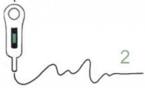
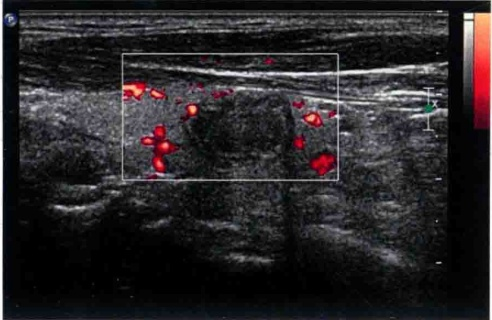
（本病例来自北京市密云区医院）
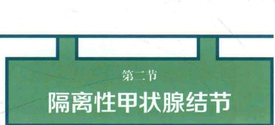
所谓的隔离性甲状腺结节（sequestered thyroid nodule）又称为甲状腺寄生性结节或副结节，是指位于甲状腺周围的甲状腺结节（图1-2-1），这种结节不是与甲状腺主体之间缺乏解剖学联系，就是外科医师或者影像学上未能找到这种联系。这类病变与寄生性子宫平滑肌瘤有些相似，是原有的位于甲状腺外的腺体（迷走甲状腺）病变所致还是甲状腺内的结节性病变逐步游离而成，还有争议，多数学者认为是后者。
隔离性甲状腺结节在病理上很少表现为正常甲状腺的改变，通常表现为结节性增生或结节性桥本甲状腺炎，而表现为弥漫性增生（Graves病）的并不常见。
病理学上的诊断要求结节与甲状腺处于同一筋膜层面，与淋巴结无关，并且显示与主体甲状腺具有相同或类似的组织学表现。
隔离也可以发生于（实际上可能更为常见）纵隔的甲状腺结节性增生。隔离的结节与主体甲状腺具有相同的形态改变，在解释桥本甲状腺炎时可能出现严重的问题，因为桥本甲状腺炎的非典型性（作为嗜酸性细胞改变的组成部分）和大量淋巴细胞浸润（作为甲状腺炎的组成部分）的共同存在，可能导致非常类似于含有转移性肿瘤的淋巴结的表现。这些对于病理医师是一种挑战。
在超声影像学上，通常发生在甲状腺周围与甲状腺本身无明确联系的结节性病变都要考虑到隔离性甲状腺结节的可能，尤其是这些结节的内部回声和结构与甲状腺内的病变具有相似之处时。在颈侧部的隔离性甲状腺结节要注意与颈部淋巴结的鉴别，在甲状腺后方的结节要注意与甲状旁腺的结节相鉴别。隔离性甲状腺结节的血流通常来源于甲状腺动脉的分支，但是这些分支通常比较细小，并不能作为鉴别诊断的必要条件。在无法明确病变来源的时候，细针穿刺细胞学或粗针组织学活检是必要的鉴别手段，可以避免不必要的外科手术。
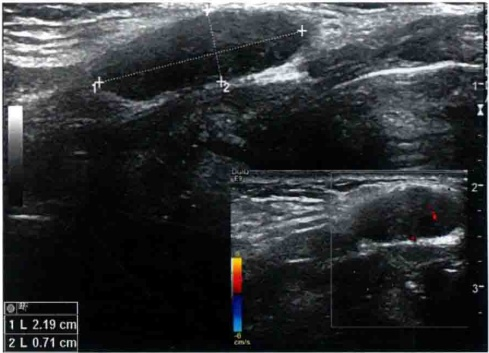
位于甲状腺上方甲状软骨板前方的低回声结节，未见与甲状腺主体的延续与连接，结节内部回声不均，图1-2-1与图1-2-2及图1-2-3中的甲状腺实质回声类似，右下角为彩色多普勒超声所见。图1-2-2为典型的桥本甲状腺炎的表
现，右下角为彩色多普勒超声所见。
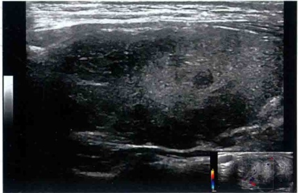
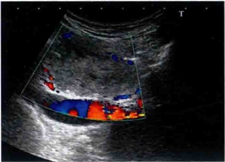
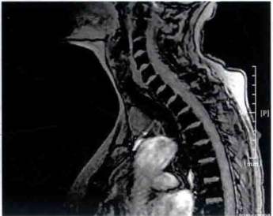
颈侧部囊实性包块 一甲状腺乳头状癌的指示器
甲状腺乳头状癌（papillary thyroid carcinoma，PTC）非常容易发生颈部淋巴结转移，15%～20%的甲状腺乳头状癌从淋巴结转移为首发症状就诊。有时原发病灶非常小，甚至无法检测到。
实性的 PTC 转移淋巴结，利用超声不难诊断。不过，PTC 转移淋巴结非常容易发生囊性变，有的甚至会伴有显著的囊性变，在影像学上仅仅表现为一个以囊性为主的包块，这一类囊性包块容易被误诊为其他病变，造成治疗上的延误。
研究显示，74.5% 的 PTC 转移淋巴结内伴有囊性变，其中 24.5% 为显著囊性变（即囊性成分 > 50%）。原发病灶有无囊性变与转移淋巴结有无囊性之间没有相关性。
欧洲的一项研究显示，位于颈侧部（相当于第三至五区淋巴结）囊实性包块中，96%以上都是PTC转移淋巴结的囊性变。国内没有相关的研究数据，不过由于国内淋巴结核的发生率较高，数值应该不会达到这么高。
不管具体的研究数值如何，相信颈侧部的囊实性包块中有相当一部分是PTC转移淋巴结囊性变的结果。因此，作为超声医师，应该将颈侧部的囊实性包块或淋巴结的部分囊性变作为PTC的一个重要指示器。一旦发现颈侧部的囊实性包块或淋巴结的部分囊性变，都要意识到可能存在PTC的可能。
由于囊性变的存在，细针穿刺（fine needle aspiration，FNA）在PTC转移淋巴结囊性变的诊断中的阳性率非常低，不过可以对穿刺液和组织冲洗液做甲状腺球蛋白测定，甲状腺球蛋白水平升高是诊断PTC转移的重要依据。
经典病例：
患者女性，21岁，以颈部包块就诊。超声见右侧胸锁乳突肌后方囊实性包块，以囊性成分为主（图1-3-1）。
术后病理：甲状腺乳头状癌转移。
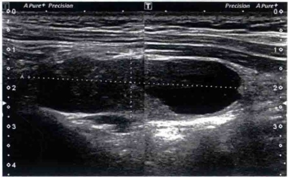
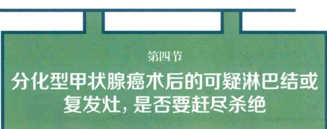
由于影像技术的进步与发展，甲状腺癌的检出率大幅提升，导致在世界范围内出现甲状腺癌发病率大幅度增加的现象。这些新增的甲状腺癌几乎都是分化型的甲状腺癌，其中以乳头状癌为主。
甲状腺癌的检出率增加，必然导致甲状腺癌手术量的增加。这些甲状腺癌手术患者的术后常规检测便成了一项常规任务。其中最主要的一项术后常规检查就是利用高频超声检查颈部有无肿瘤复发或有无淋巴结的转移。研究表明，约30%的分化型甲状腺癌术后可以出现颈部淋巴结的转移或复发。现在大部分的医疗中心都是采取再次手术的方式进行清扫。再次手术的并发症和其他风险是广泛存在的，那么承担这种风险是必要的吗？
超声检查的高灵敏性可以非常容易发现颈部的可疑淋巴结或可疑的复发癌结节。某些特征还能够很容易指向甲状腺的乳头状癌。用何种方式处理这些可疑淋
巴结或复发灶就成为超声医师必须向患者解释清楚的一个问题。
近年来，一些研究小组对这一类情况做了比较系统的研究。研究发现，分化型甲状腺癌术后的颈部可疑淋巴结或复发灶，在相当一部分患者当中是稳定的，这些颈部淋巴结内的转移癌和颈部的复发灶是惰性的，可以长期随诊观察而不必行再次手术清扫。
E. Robenshtok 的研究小组发现：经过 3.5 年的随诊观察，这些可疑淋巴结中只有 20% 的淋巴结最长径增长 ≥q 3mm，9% 的淋巴结最长径增长 ≥q 5mm；没有其他局部并发症（如神经损伤）的出现，没有与疾病相关的死亡病例出现。
鉴于这些研究越来越多，美国甲状腺协会在2015版的指南中提出以下推荐：颈部体积较小的分化型甲状腺癌淋巴结转移灶或复发灶多数情况下是惰性的，可以随诊观察。对于颈侧部短径 ≤1.0cm，中央区短径 ≤0.8cm的可疑淋巴结可以选择随诊观察，而不采取任何介入性的干预措施（包括活检）。对于颈侧部短径 ≥1.0cm，中央区短径 ≥0.8cm的可疑淋巴结应该首先进行细针FNA，明确诊断后可以选择局部分区的淋巴结切除术或其他的超声引导下的介入治疗（包括酒精注射、射频及微波消融）等。
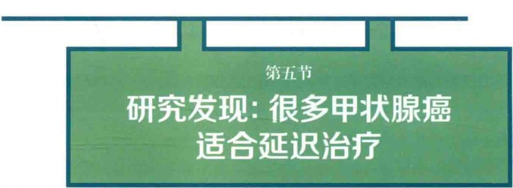
现年55岁的特里·德邦尼斯（Terry DeBonis）四年前被诊断出患有甲状腺癌。她决定监测肿瘤而不是立即做手术。大多数被诊断出患有癌症的人都希望尽快开始治疗，因为他们担心延误治疗会让他们的肿瘤失控。因此，特里·德邦尼斯选择监测肿瘤而不立即做手术的方法似乎有些出人意料。虽然她四年前就被诊断出患有甲状腺癌，但她仍然没有开始治疗。
特里·德邦尼斯和她的医师没有按照传统的方法选择立即切除她的肿瘤，而是决定等一等，观察她的肿块的变化，每六个月用超声波检测一次。德邦尼斯和她的医师决定选择在肿瘤出现明显变大的情况下才进行手术。
55岁的特里·德邦尼斯说她有充分的理由不做手术。就在她被诊断出癌症的前一年，她的锁骨因车祸而经历了两次痛苦的手术。“每次手术都有风险和并发症，”本身是新泽西州格伦罗克医院护士的德邦尼斯说，“我不想让自己经历这些。”
纽约纪念斯隆·凯特琳癌症中心（Memorial Sloan Kettering Cancer Center，MSKCC）的内分泌肿瘤学家迈克尔·塔特尔（R. Michael Tuttle）博士说：“约1/3或更多生长缓慢的甲状腺癌患者有资格推迟治疗”（图1-5-1）。
在塔特尔的研究中，291名肿瘤风险较低的甲状腺癌患者选择了观察和等待的方法。医师建议两年内径线增长 ≥3mm的肿瘤（超声波下可以分辨的最小变化）考虑手术。
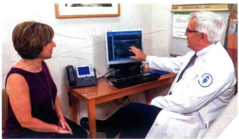
根据这项研究，两年后，只有2.5%的患者的肿瘤增长达到这么多，到五年后，12%患者的肿瘤至少增加了3mm。重要的是，这些肿瘤都没有扩散到甲状腺以外，这是一种癌症具有侵袭性的信号。令研究人员惊讶的是，其中有19名患者的肿瘤的体积至少缩小了一半。塔特尔说：“我们之前认为这种情况在
一百万年内都不会发生。”研究显示，291例患者中最终只有10名患者达到了手术标准。
塔特尔说，年龄较大的患者肿瘤生长增大的可能性最小。他说，20～30岁的患者在两年内肿瘤增大3mm的概率为10%～15%，而60岁以上的患者两年内肿瘤增大3mm的概率为1%～2%。癌症主要是一种与年龄相关的疾病。
如今发现的许多甲状腺肿瘤太小，患者根本感觉不到也不会引起症状。反而是医师在进行CT扫描或超声波检查时偶然发现了这些微小的癌症。
德波尼斯说她的癌症就是在她的内分泌医师做超声检查的时候发现的，她的内分泌医师一直在治疗她多年的甲状腺功能不足。在医师取出一小块组织样本的活检中发现了癌症。
克利夫兰诊所基金会（Cleveland Clinic Foundation）的耳鼻喉科医师约瑟夫·沙普夫（Joseph Scharpf）博士在2014年的一项研究的一篇社论中指出，1975—2009年，甲状腺癌的发病率几乎增加了两倍，几乎所有的增长都来自生长最慢的甲状腺乳头状癌。然而，甲状腺癌的死亡率并没有改变。这表明医师们正在检测许多无害的癌症。
塔特尔说：“尸检研究表明，约10%的美国人患有未诊断出的甲状腺癌，其中绝大多数从未造成过伤害”。据美国癌症协会（American Cancer Society）估计，2017年美国将新增56870例甲状腺癌病例，其中2010名美国人将死于甲状腺癌。约3/4的甲状腺癌患者是女性。“我们一直在治疗一些我认为不需要治疗的疾病。”塔特尔说。
2017年5月，美国预防服务工作组（U.S. Preventive Services Task Force）建议，人们不应接受甲状腺癌的常规筛查，因为这增加了他们接受治疗的风险，这些肿瘤永远不会引发问题。
甲状腺切除会使患者在余生中依赖于甲状腺替代激素。塔特尔说：“许多使用替代激素治疗的患者抱怨体重增加和疲劳，说他们感觉不像既往的自己”。
塔特尔说：“五年前，基于来自日本的鼓舞人心的研究，纪念斯隆·凯特林癌症中心决定允许一些低风险肿瘤患者推迟手术，认为这样做是安全的、有利的。不过医师仍然建议那些肿瘤较大、更具侵袭性的患者应该立即进行手术。”
迈克尔·塔特尔（R. Michael Tuttle）博士在2018年ATA年会上明确反对甲状腺癌的早期筛查，并明确提出应该将这一类疾病称为non actionable finding。
[注：这篇文章是发表在MSKCC网站上的一篇科普文章。纽约纪念斯隆·凯特琳癌症中心是美国最好的癌症治疗中心之一，在2017年的北美癌症治疗中心的排名中列第二位。文章中的迈克尔·塔特尔（R. Michael Tuttle）博士在2018年10月召开的ATA年会上更是明确反对甲状腺癌的早期筛查，并明确提出应该将这一类疾病称为non actionable finding]。
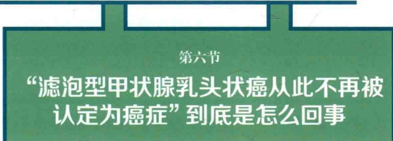
微信朋友圈内曾被一篇“滤泡型甲状腺乳头状癌从此不再被认定为癌症”的文章刷屏。这个题目显然是哗众取宠了，准确地说应该是“专家建议包膜亚型的滤泡型甲状腺乳头状癌应该进行名称修订”。以上内容来源于2016年4月14日发表在JAMA Oncology上的一篇文章（图1-6-1）。JAMA Oncology是世界顶级医学杂志JAMA的子刊，虽然成立不久，但是水平非常高，因此这篇文章还是非常重要的。
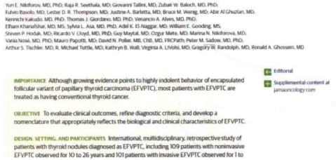
要澄清的是并非所有的滤泡型甲状腺乳头状癌都不再建议是用“癌”来表述，仅仅是滤泡型甲状腺乳头状癌中的包膜亚型（Encapsulated follicular variant of papillary thyroid carcinoma）不再建议使用carcinoma来表述，而是建议使用“noninvasive follicular thyroid neoplasms with papillary-like nuclear features”（NIFTP），比较准确的翻译是“具有乳头状癌核特征的非浸润性滤泡性甲状腺肿瘤”。
甲状腺乳头状癌是甲状腺癌中最常见的类型，因肿瘤细胞以乳头状生长为特征而得名。不过，甲状腺乳头状癌的诊断主要是依靠其肿瘤细胞的细胞核特征来判断：细胞核呈毛玻璃样改变、核沟等（这也是穿刺细胞学诊断甲状腺癌的基础）。但是有一类甲状腺肿瘤细胞具有上述的甲状腺乳头状癌的细胞核的特征，但是呈滤泡样排列，而非乳头样排列。从20世纪70年代开始，这一类肿瘤被分类为滤泡型甲状腺乳头状癌。现在在比较好的医疗机构中，滤泡型甲状腺乳头状癌占所有甲状腺乳头状癌的10%～15%（这取决于病理医师的水平和认识）。
滤泡型甲状腺乳头状癌又可以分为几种亚型，主要是包膜亚型和侵润亚性。前者在肿瘤周围有完整的纤维包膜，后者肿瘤周围的包膜被局部或弥漫性侵润
（这一型在很多机构的病理科都被直接当成滤泡癌了，但事实上，其生物学行为更像乳头状癌，而不是滤泡癌）。很多研究表明，包膜亚型的滤泡型甲状腺乳头状癌基本上具有良性病变的生物学行为，这也是JAMA Oncology上刊登的这篇文章极力提倡重新命名的根本原因，目前对这些病变的治疗显然是过度了。
在某年的超声医师年会上，特意组织了一场关于甲状腺活检是采用“细针”还是“粗针”的辩论赛。辩论赛中双方唇枪舌剑。对细针细胞学和粗针组织学的优劣都有很多的阐述。笔者作为评委参加了这一辩论赛，从中学到不少东西。
目前能见到的国内外所有关于甲状腺结节穿刺活检的指南中都将细针穿刺细胞学作为一线的活检手段。而其他的组织学活检都是辅助手段。
不过辩论赛的正反双方都没有从更深层次阐明细针穿刺细胞学能成为各种指南中甲状腺结节活检一线手段的原因。
支持细针的一方认为，细针穿刺细胞学准确率高（几乎可以与粗针组织学媲美）而并发症少，因此才成为指南推荐的一线手段。
支持粗针的一方认为，粗针组织学对结节的诊断准确率明显高于细针细胞学，而经过培训的有经验的医师采用粗针穿刺的并发症与细针穿刺差别不大。而且不需要专门的细胞学病理医师辅助，因此，更值得推广。
双方的上述观点都有些瑕疵。事实上多个研究表明，甲状腺结节采用弹簧式粗针（18G 为主）组织学活检的并发症与细针穿刺细胞学的并发症并无显著差别。也就是说，并发症少并非指南推荐细针细胞学的原因。
整体上讲，粗针组织学活检的准确率明显高于细针细胞学，而且穿刺成功率也显著好于细针细胞学。但是如果仅仅考虑甲状腺乳头状癌的诊断准确率，粗针
组织学活检的结果反而略输于细针的细胞学活检了。
大家知道，甲状腺结节中有5%～10%为恶性，而这些恶性结节中又有90%以上（甚至更高）是甲状腺乳头状癌。既然细针细胞学诊断甲状腺乳头状癌的诊断准确率优于粗针组织学活检，因此，成为指南中一线推荐选择也就理所当然了。
不过，细针细胞学在诊断其他少见类型的甲状腺恶性肿瘤方面（未分化癌、髓样癌、淋巴瘤、转移癌等），其准确性就远远低于粗针组织学活检。因此，目前已经有部分的指南中提出，对于临床上或影像学上具有上述少见类型的甲状腺恶性肿瘤特征的病例，应该首选粗针组织学活检。
那么为什么对甲状腺乳头状癌的诊断准确率，粗针组织学活检的结果反而略输于细针细胞学活检呢？这就要从甲状腺乳头状癌的肿瘤细胞的特征说起。在细胞病理学上，甲状腺乳头状癌的肿瘤细胞几乎是所有肿瘤细胞中最容易辨识的一类细胞，具有“核大、深染、有核沟、包涵体”等典型特征，在显微镜下非常容易辨识。倒是在组织学上因为制片的原因识别起来略有难度，必须依靠其他组织学特征来诊断。
各种指南中把细针穿刺活检作为甲状腺结节活检的一线手段还有一个非常重要的原因是基于卫生经济学和就医效率方面的考量（但这是在欧美国家的情形）。在欧美国家，一个能够出具组织学病理报告的医师必须是经过四年以上培训的专职病理医师，收费昂贵。而细胞病理学的报告只要经过四周左右细胞病理学专业培训的普通医师或检验师就可以出具报告，收费低廉。此外，细胞病理学的制片简单，能够现场评估，这一点对欧美的医师来讲就非常方便，也非常有价值。
我国的国内情况则大不相同。首先，我国的普通病理组织学检查的收费非常低廉（北京为40元/例）。此外我国规定只有具有资质的专业细胞学病理医师才有资格出具细胞病理的报告。而这样的专职细胞学病理医师在绝大部分基层医院并没有配备。这几点几乎使得细针细胞学活检上述的优势消失殆尽。
因此，笔者认为，在我国倒没有必要在各级医院都开展细针穿刺活检。而我国的各种指南也不必完全照抄国外的指南，应该结合我国的实际情况，制定符合我国国情的各级医院操作指南。对于国内已经开展甲状腺粗针组织学活检基层医
院没有必要跟风开展细针细胞学活检。
另外，无论细针细胞学活检还是粗针组织学活检，都无法判定甲状腺滤泡性肿瘤的良恶性。
笔者曾在 “华斌的超声世界” 公众号中介绍了一例木村病的超声表现。看到留言中有个叫 “混混” 的网友问到 Castleman 病怎样鉴别。正好笔者保存有四例 Castleman 病病例，本节与大家分享三例。另外第四例是一个青春期男孩，已经经过化疗后来复查，经患者介绍原来发病的部位，看到的淋巴结均已是很典型的结构正常的病灶。未治疗前的超声资料缺失，但由此可获得的信息是该病化疗后可恢复正常。
巨淋巴结增生症（Castleman disease）：1954年Castleman首先报道的淋巴结病。镜下可见淋巴滤泡和毛细血管增生，称血管滤泡性淋巴结增生，也被称为淋巴错构瘤，是一组少见的淋巴增生性疾病。
临床分为：局灶型（预后较好），多中心型（易发展为恶性肿瘤）。
病理分型：透明血管型及浆细胞型。
经典病例1：
患者男性，24岁，右侧颈部多发大小不等淋巴结，彼此不融合，最大约 5 cm×3.8 cm×3.0 cm（图1-8-1）。
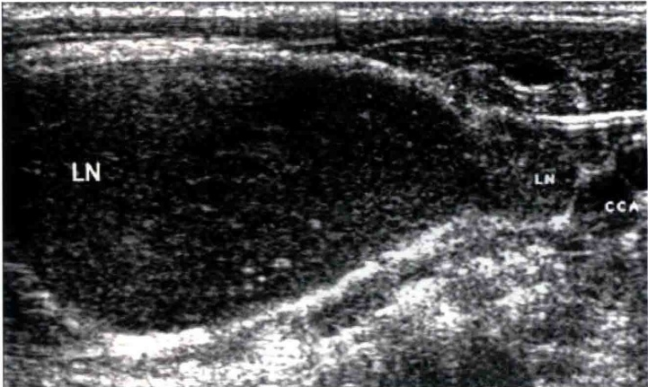
结内的血流并不丰富，这一点不太像淋巴瘤（未经治疗过的）（图1-8-2）。该患者多数淋巴结的长径与短径比值≤2。
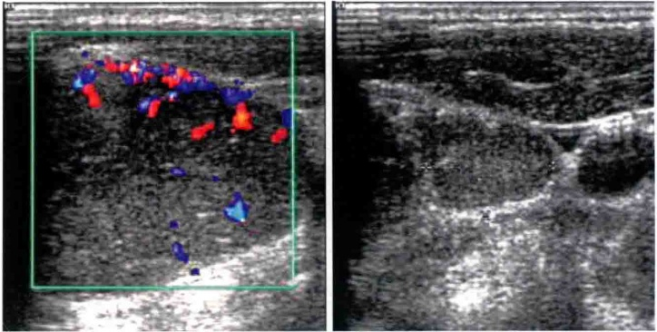
小结：所有肿大淋巴结均无淋巴门结构，内部呈较均匀低回声，边界锐利，L/S 均 ≤2.0。基本可排除反应性增生性淋巴结。整体看，有些类似淋巴瘤的征象，但比淋巴瘤回声略高。“大”是一个鲜明的特点，但血流并不丰富，未经治疗过的这么大的淋巴瘤，通常血供是比较/非常丰富的。淋巴瘤的多个病灶中，常常有一部分淋巴结残存，以及数量不等的淋巴门结构。本例无。
经典病例2：
患者女性，30岁，右颈部淋巴结无痛性肿大，从图1-8-3看首先还是要怀疑淋巴瘤。
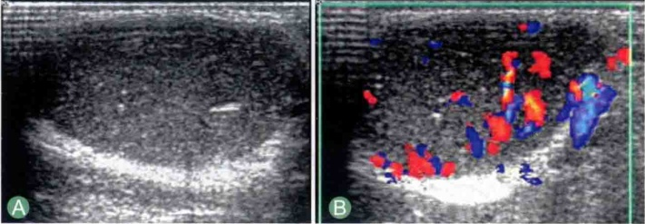
奇怪的是多处多普勒超声取样都是静脉，动脉很少，这点就不像淋巴瘤了（图1-8-4）。所以整体来说，血供并不丰富。
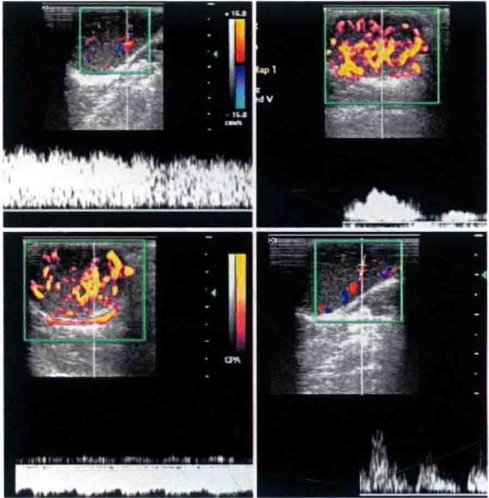
彩色多普勒超声显示多处进行多普勒取样几乎都是静脉，偶见动脉，这点不像淋巴瘤
小结：如果是淋巴瘤且病灶径值较大时，有时出现内部网状回声，本例无。病例2病灶很大，淋巴结内均无淋巴门结构，声像图倾向恶性，但动脉血供不鲜明，患者一般情况好，感觉不“凶险”。
经典病例3：
患者男性，14岁。双侧颈部肿大淋巴结，低热，无触痛。嗜酸性粒细胞略高，淋巴细胞比例略高（图1-8-5，图1-8-6）。超声初诊印象：传染性单核细胞增多症？木村病？淋巴瘤？建议穿刺活检。
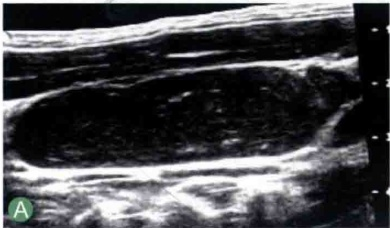
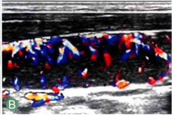
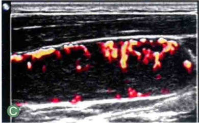
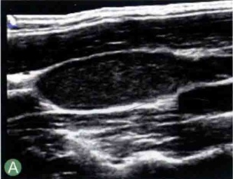
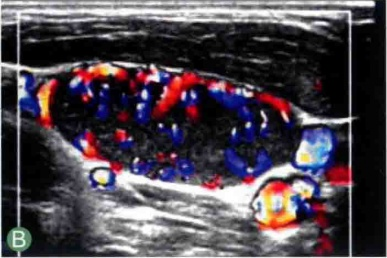
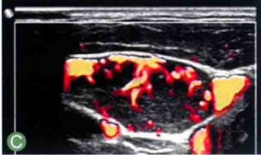
A. 二维声像图；B. 彩色多普勒声像图；C. 能量多普勒声像图
病理：巨淋巴结增生症血管玻璃样变性。
小结：本例受累淋巴结以椭圆形为主（L/S > 2）。均无淋巴门结构。血流
分布以周围型伴向心性分支。本例笔者初诊未考虑到该病，主要还是对该病缺乏认识和警惕。
总结与结论：巨淋巴结增生症仅发生于淋巴结，而且淋巴结通常呈巨大增生。与传染性单核细胞增多症的鉴别：传染性单核细胞增多症在灰阶上具有某些与淋巴瘤混淆的征象，但血流走行多为门型。
与木村病鉴别：后者病灶一般局限分布（以颈部1、2区多见），典型木村病表现为很不均质的肉芽肿类征象时，易鉴别；但部分木村病也可表现为相对均匀的类似恶性表现。木村病可呈门型血流，也可呈周围型。
与淋巴瘤鉴别：巨淋巴结增生症其实与淋巴瘤很相似，只是前者相对血供少，回声比淋巴瘤略高。经向血液科专家咨询，巨淋巴结增生症介于良恶性之间，多主张化疗干预。多中心型必须化疗。
（本病例由解放军总医院第四医学中心傅先水主任提供）
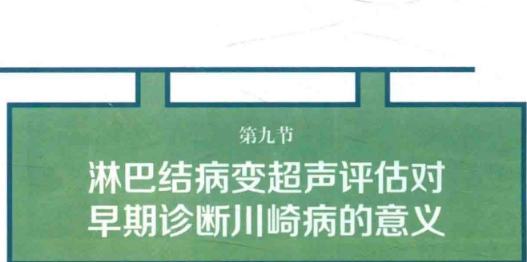
川崎病（Kawasaki disease）又称“小儿皮肤黏膜淋巴结”，最早在1967年由日本医师川崎富作（Tomisaku Kawasaki）首次报道，目前病因仍未明，是一种多系统血管炎症候群，主要累及中型管径（medium-sized）及以下的血管，可能与某种异常免疫反应有关，有一定的基因易感性（genetic susceptibility）。美国的流行病学资料显示该病80%以上发生于五岁以下儿童，中位年龄1.5岁。该病年发病率美国为19/10万，而日本的数据是124/10万。每年的1～3月发病最多，提示发病可能有环境因素。
川崎病最大的风险是心血管并发症，少数可由于冠状动脉瘤破裂或发生心肌
梗死而致猝死。未经治疗或延误治疗的患者死亡率为1%～2%，及时治疗者的死亡率为0.17%，该病有效的治疗方案包括早期经静脉应用丙种球蛋白和大剂量阿司匹林，顽固性病例或对上述药物效果不显著者可加用类固醇药物。
因此，该病的早期诊断和早期应用免疫球蛋白，对于降低猝死率十分关键，但遗憾的是诊断只能依赖临床表现，没有特异性实验室检查手段，超声心动图阳性表现虽然对诊断很有帮助，但对很多病例来说这时再用药物往往太晚。美国心脏病学会推荐的诊断标准是依赖于综合的临床表现（图1-9-1）：
持续发热五天及以上，并伴有下列五项中之四项者，可诊断该病并及早用药：
（1）口腔及口唇表现：口唇开裂红斑，草莓舌。
（2）躯干皮疹。
（3）手足红斑（2～3周后蜕皮）。
（4）眼部：双侧非化脓性结膜炎。
（5）颈部淋巴结肿大（触诊＞1.5mm），通常为单侧。
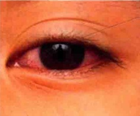
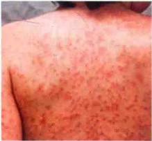
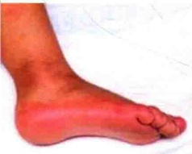
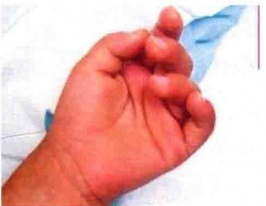
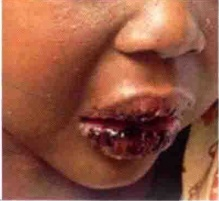
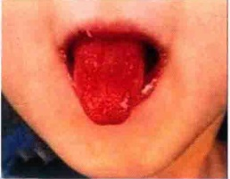
有经验的医师也主张可在发热第四天伴有上述表现时做出诊断，旨在尽早用免疫球蛋白和阿司匹林，减少心血管并发症及猝死率。由于上述表现中的单独一条或数条与其他疾病的表现重叠，因此早期诊断并不总是一件容易的事。
约有10%的病例为非典型表现型，即不能满足按上述的诊断标准，这部分病例的早期诊断更难。有些患者是以发热伴颈部淋巴结肿大为首发的表现，同时也可出现白细胞增高或正常，这和急性细菌性淋巴结炎以及病毒性淋巴结肿大（如传染性单核细胞增多症）的鉴别就更为迫切，有文献报道该病被误诊或延误治疗的病例中，80%属于此类表现（文献引自：KANEGAYE J T, COTT, E V, TREMOULET, A H, et al. Lymph-node first presentation of Kawasaki disease compared with bacterial cervical adenitis and typical Kawasaki disease. J. Pediatr. 2013, 162: 1259–1263.）。这时，超声评估淋巴结如能提供诊断信息或诊断思路，缩短患儿观察期，避免由于延误治疗造成并发症就很有价值。
目前只检索到两篇文献谈及该病所致的淋巴结肿大之超声表现（文献引自：TASHIRO N, MATSUBARA T, UCHIDA M, et al. Ultrasonographic evaluation of cervical lymph nodes in Kawasaki disease. Pediatrics, 2002, 109: E77–87. 等），概括有以下表现：超过64%的病例肿大淋巴结融合成葡萄样（cluster of grapes appearance），彼此大小一致；而且观察病例中没有液化坏死（图1-9-2～图1-9-5）。这一表现对于小儿急性细菌性淋巴结肿大鉴别有帮助，后者更多表现为一个优势的肿大淋巴结（68%），常有部分液化甚至呈化脓性征象。川崎病淋巴结与周围组织分界清晰，细菌性淋巴结炎边界模糊常见。绝大多数（88%）川崎病肿大淋巴结内部均匀，而细菌性淋巴结内部不均匀者比例较高。
综合上述表现，声像图可提供一些诊断思路，也可避免或减少不必要的抗生素应用，以免延误病情。
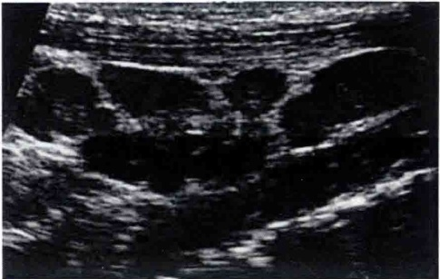
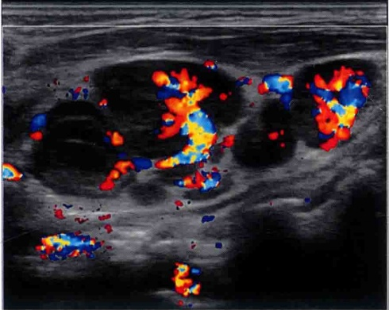
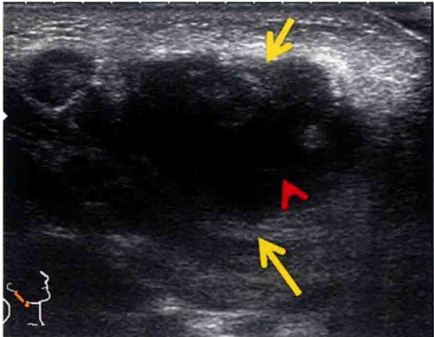
边缘模糊，有液化坏死，有一个优势的肿大淋巴结而不呈现“葡萄样”（黄色箭头：边缘模糊，红箭头：液化坏死）
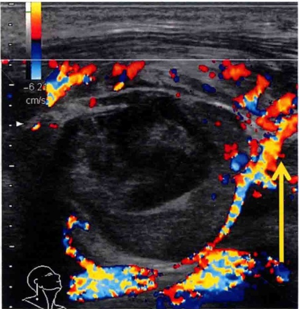
边缘模糊，有液化坏死，有一个优势的肿大淋巴结，黄色箭头提示门型血流位移至被膜下
而川崎病无论发病年龄，发热及肿大淋巴结表现与病毒性感染，尤其是儿童常见的EB病毒引起的传染性单核细胞增生症的表现也很相似。笔者对川崎病淋巴结没有经验，但观察过30多例传染性单核细胞增多症（图1-9-6，图1-9-7），其淋巴结声像图与川崎病很相似，也可融合成类似“葡萄样”表现（淋巴结核也可以由此表现，但结核内部不均匀，常有钙化、液化等其他征象）。
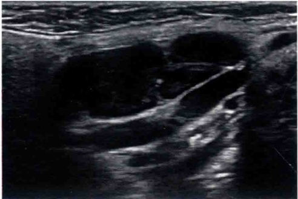
鉴别传染性单核细胞增多症和川崎病的要点：
（1）传染性单核细胞增多症常有血常规的异型淋巴细胞（＞10%），淋巴细胞比例增高（＞50%），EB病毒抗体检查虽然对传染性单核细胞增多症也很有帮助，但川崎病强调的是早期诊断。
（2）声像图上，传染性单核细胞增多症及病毒性淋巴结常见到淋巴门内部有回声减低区，即“门中门征”现象，此征象具有鉴别意义，可参考《华斌的超声笔记（第3辑）》第三章第四节。
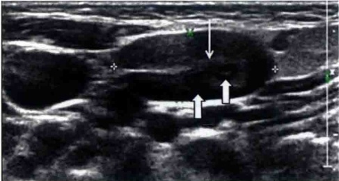
细箭头：淋巴门，粗箭头：门内回声减低区
（3）最重要的，几乎所有传染性单核细胞增多症淋巴结是颈部双侧分布，双侧融合。而无论是超声还是CT的文献均提到川崎病多是单侧淋巴结肿大。
（4）CT常发现川崎病的患者部分表现为单侧颈部咽后水肿，这一发现对诊断很有特异性，而且川崎病淋巴结肿大很少在四区发生。
对于为什么川崎病的淋巴结为单侧发生，且不出现于四区，原因未知，有作者推测可能与感染路径和淋巴引流有关。
综上所述，通过耐心细致的声像图分析结合血常规，超声对于早期提示川崎病的诊断思路是有帮助的。
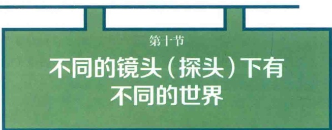
北京的春天总是匆匆而来，匆匆而去。短暂的春天里，五颜六色的花朵占据了北京城的各个角落。不过，在草坪上、花坛里有无数细小的野花也在拼命开
放，却很少有人会去关注，因为它们实在太细微了。
附地菜就是这样一种小花。春天的草坪上到处是它们的身影，却很少有人注意到这些努力绽放的小花。紫草科的附地菜，花朵十分细微，直径 ≤1mm，如图1-10-1所示：
如果换个微距镜头仔细看看，就会发现原来附地菜这微不足道的小花居然如此精致，如此脱俗（图1-10-2）。
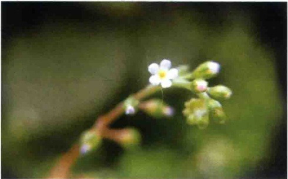
超声探头可以说是超声医师探索病灶的“镜头”。不同频率的超声探头具有不同的分辨率，选择不同的探头，可能会发现完全不同的世界。
经典病例：
患者男性，63岁，以颈部触及包块就诊。超声检查首先选用常规的8MHz的探头扫查，如图1-10-3所见：颈部多发的极低回声肿大淋巴结，淋巴结内部结构不清。此外在二维声像图中并无其他特殊发现。
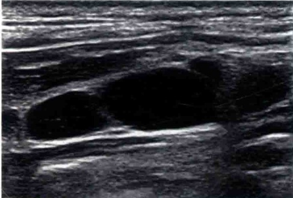
换用更高频（13MHz）探头，所见如图1-10-4：肿大淋巴结内部呈明显的筛网状，内部可见大量的低回声微结节“heterogeneous micronodular pattern”（不均质微小结节型改变），这是淋巴瘤的典型征像。
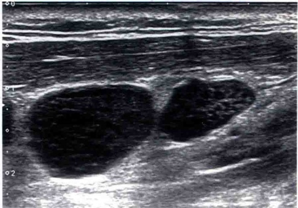
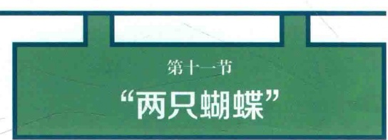
两只黄蝴蝶，双双飞上天；
不知为什么，一个忽飞还。
剩下那一只，孤单怪可怜；
也无心上天，天上太孤单。
上面这首非常口语化的小诗的作者是大名鼎鼎的胡适先生。1916年8月23日，胡适写下中国第一首白话诗《两只蝴蝶》（原题《朋友》），发表在1917年2月的《新青年》杂志。自此之后，一个不同于汉赋、唐诗、宋词、元曲、明清小说的文体开始出现，这就是中国新诗的初始。
不过我们本文要讲的内容与文化变革和科学昌明的关系不大。讲的是颈部的“两只蝴蝶”。大家知道，甲状腺大体形状很像一只展翅飞翔的蝴蝶。那么另外一只蝴蝶是什么呢？
异位胸腺！
完全性颈部异位胸腺分列于两侧，也非常类似于一只展翅的蝴蝶，断面解剖上也常常呈现这一特征（图1-11-1～图1-11-4）。成年人胸腺由于已经完全脂肪变，所以整体上呈现为脂肪样的回声，内部常伴有点状强回声（即所谓的“星空征”）。
经典病例：
患者女性，30多岁。因颈前区触及无痛性质软包块就诊。
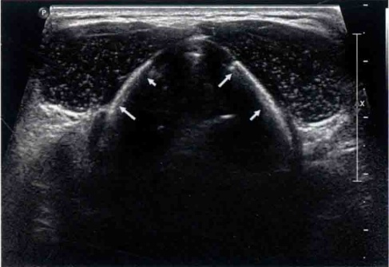
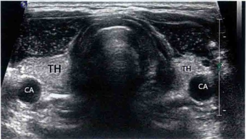
环状软骨水平横断面，对称性低回声包块后方可见另外一只蝴蝶——正常甲状腺上极（TH），CA：颈总动脉
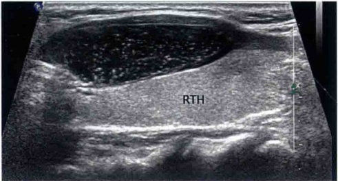
右侧纵断面，RTH：右侧甲状腺
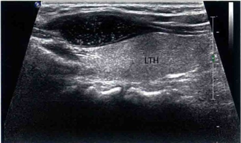
左侧纵断面，LTH：右侧甲状腺
副腮腺是腮腺的正常变异，通常表现为在面颊部腮腺导管走行区，另外出现一个或几个与主腮腺分离的小的腮腺腺体结构。一般位于咬肌的浅方（图1-12-1）。
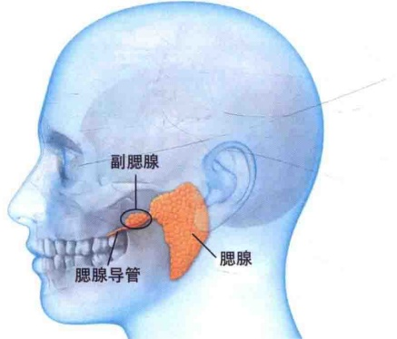
副腮腺有独立的血供，一般来自面动脉。副腮腺还有独立的导管汇入主腮腺导管。副腮腺并不少见，在一般人群中的发生率约为20%。
声像图上，副腮腺显示为均质的中等回声，多呈椭圆形或梭形，内部回声与腮腺一致，位于腮腺导管走行区咬肌的浅方。其内部血流与正常腮腺类似。
副腮腺与腮腺一样，可以发生各种腮腺好发肿瘤。副腮腺发生的腮腺肿瘤约占所有腮腺肿瘤的1%，最常见的还是混合瘤（多形性腺瘤）。因此发现面颊部孤立的实性肿块要考虑到副腮腺来源的可能。
患者女性，27岁，触及面颊部质软包块就诊（如图1-12-2）。
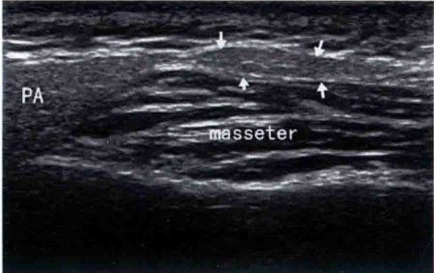
超声显示腮腺前方、咬肌浅方可见一等回声梭形包块，此为副腮腺（箭头）。
PA: 腮腺；masseter: 咬肌
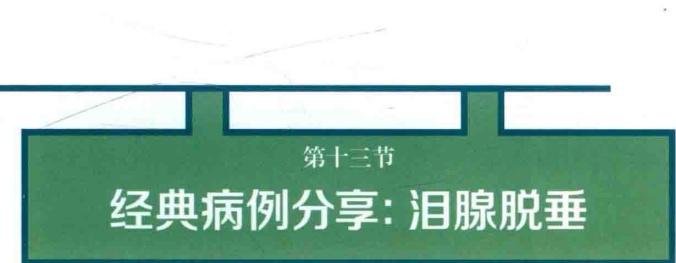
正常泪腺位于眼球外上方的外眦处泪腺窝内。泪腺脱垂比较少见，常见于女性患者（图1-13-1，图1-13-2）。原因不明，常与眼睑松弛伴发，睑皮松弛一般出现泪腺脱垂日久之后。可以双侧，也可以单侧发生。多发生于年轻女性患者。
临床表现为上睑反复红肿，皮肤变薄，松弛而多皱纹；上睑外侧饱满，表现“肿眼泡”；轻度睑下垂；上睑皮下可扪及一质硬、杏仁大小分叶而能自由移动的包块，易推回并重定于泪腺窝，但常又脱出如故；不痛，神经性流泪。
因患者常以眼睑部“包块”就诊，偶尔会有医师请超声医师检查“包块”性
质。因此作为超声医师，应该对本病稍加了解，以免今后遇到时不知所措。
经典病例：
患者女性，47岁，因左侧眼睑肿胀就诊（图1-13-1）。
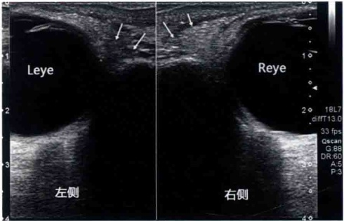
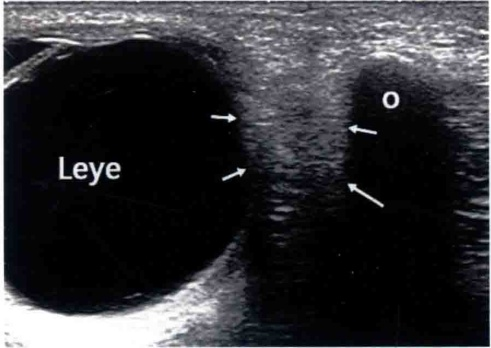
急性鼻窦炎（acute rhinosinusitis，ARS）定义为病程少于四周、有症状的鼻腔和鼻窦炎症。ARS最常见病因是与普通感冒相关的病毒性感染。仅0.5%～2.0%的病毒性鼻-鼻窦炎并发急性细菌性感染。单纯性急性病毒性鼻-鼻窦炎通常在7～10日消退。急性细菌性鼻-鼻窦炎也最为自限性疾病，75%的患者不经治疗可在一个月恢复。极少数情况下，未进行治疗的细菌性鼻-鼻窦炎患者可能发生严重并发症。
临床表现：鼻充血和鼻塞、脓性鼻分泌物、上颌牙不适以及面部疼痛或面部受压感，当身体前曲时面部疼痛或面部受压感加重。
诊断性检查包括微生物培养、内镜检查、放射学检查。根据各种指南，ARS的诊断主要依靠临床表现。但是，ARS的临床表现缺乏特异性，与其他上呼吸道感染的临床表现多有重叠，因此临床实践中需要一种简单可靠的影像学手段来提供更充足的证据。CT检查是目前公认的首选影像学检查，CT检查可以显示鼻窦内的气液平面、黏膜水肿和窦内气泡（图1-14-1）。相对于CT检查，超声具有更为便捷、无放射性的特点，如果超声检查能够对判断ARS有帮助，就可以作为一种简便有效的影像学手段代替相对不方便的CT检查。
鼻窦是位于面中部前部成对的含气腔。每个鼻窦都有一个独特的骨性开口，鼻窦通过此口进行引流。虽然这些结构并不是鼻部气道的一部分，但它们在鼻症状中具有重要的作用，因为涉及鼻窦的病变可能导致鼻窦口和（或）鼻腔阻塞，继而引起鼻充血和梗阻症状。
上颌窦是最大的鼻窦，位于颊后方。它们大体呈三角形。顶壁为眶底，内壁为鼻腔外侧为颧骨，底壁为牙槽突和硬腭。上颌窦前后径通常为2～4cm，鼻窦积液时超声可显示鼻窦侧壁和后壁，额窦，蝶窦，筛窦超声显示困难（图1-14-2）。
研究表明，超声检查对于显示急性上颌窦炎时上颌窦内的积液和黏膜增生具有较高的特异度和敏感度。由于绝大部分的急性鼻窦炎都主要累及上颌窦，因此可以将超声检查作为急性鼻窦炎的一线影像学检查来使用。相对于CT检查，超声检查在ABRS诊断中的价值有高度的操作者差异性和稍差的准确性。但鼻窦炎是机械性通气导致发热及医源性肺炎的重要隐匿性，因此在重症病房，对插管患者进行床边上颌窦超声检查也是筛选上颌窦炎的有效手段。我们认为超声还可以监测上颌窦积液量的变化。
检查方法：一般选择坐位或站立位扫查，此时上颌窦内的液体集聚于上颌窦腔的下部。探头置于鼻旁上颌骨处由上向下横断扫查（图1-14-2）。随后选择纵断扫查可以显示气液交界处。一般选择常规3～5MHz的腹部探头最佳。
超声表现：正常上颌窦表现为由骨和窦腔内的气体构成的强回声伴有多重反射的界面，窦腔内结构不能显示（图1-14-3）。急性鼻窦炎时，上颌窦内积液和增生的黏膜使得超声波能够穿透窦腔，清晰显示上颌窦的侧壁和后壁，纵断扫查可以显示气液交界平面（图1-14-3，图1-14-4）。有时候还可以直接显示呈较高回声的增生的黏膜结构（图1-14-5）。
经典病例1：
患者女性，40岁，上感两周，右侧头痛及颌面部疼痛一周，黄脓涕，超声示右侧上颌窦积液（图1-14-3）。
A. 右侧大致呈三角形的上颌窦内积液，可以清晰显示上颌窦的侧壁和后壁（箭头）；B. 正常的左侧上颌窦声像图，窦腔内结构不能显示
纵断面扫查显示上颌窦内的气体和液体交界处（长箭头），这一断面可以大致估计窦腔内的积液量的多少
经典病例2：
患者男性，31岁，上感一周，鼻塞，流涕，超声显示右侧上颌窦积液和增生的黏膜组织（图1-14-5）。
A. 右侧上颌窦内积液，并可显示增生的黏膜结构（箭头）；B. 正常的左侧上颌窦声像图，窦腔内结构不能显示
（本文由进修医师承德市中心医院薄飞和天津市蓟州区人民医院于志英撰写）
含牙囊肿是一种牙源性囊肿，起源于发育过程中正常的牙滤泡。一般是由于未萌发或部分萌发牙釉质器的星形网层发生囊肿样变性，牙滤泡周围液体渗入牙冠与上皮之间而成，年轻患者多见。下颌骨较上颌骨发生较多。
含牙囊肿发病年龄较轻，单发最多见。好发于切牙及上列第三磨牙，也可为额外牙。其囊内物清亮，黑褐色或褐色液体，内含胆固醇。X线片显示牙周囊肿阴影见病牙之根部突入囊腔内。含牙囊肿片上可见囊肿内有单个或数个完整牙齿或牙冠，位置不固定，牙冠突入囊腔内（图1-15-1）。
由于 CT 能够清晰分辨囊肿与周围骨质及所包含在内的牙齿结构，因此，CT 是诊断含牙囊肿的首选影像学检查方法。不过超声检查也能够清晰显示囊肿的结构及其与牙齿之间的位置关系，也可以作为辅助的诊断手段。尤其是当囊内因为出血或组织碎屑聚集而造成 CT 值增高的时候，CT 会将囊肿误认为实性肿块，而利用超声检查时特有的“落雪效应”能够准确地确定病变的囊实性。
经典病例
患者男性，32岁，因发现左侧鼻翼旁隆起性包块来诊（图1-15-2～图1-15-5）。
CT矢状面显示一低密度球形包块（小箭头），包绕上侧切牙（大箭头）的牙冠。由于测得包块内侧CT值高达 60∼70HU，因此，CT将病变误判断为实性，提示为“造釉细胞瘤”
A. 高频超声显示一球形包块，包绕上侧切牙（箭头）的牙冠，包块内为致密的点状回声；B. 能量多普勒超声显示包块内部和周边均无血流信号
改用低频超声显示一球形包块，包绕上侧切牙（箭头）的牙冠，包块内为致密的点状回声
前面笔者曾经介绍过几个有关喉部的经典病例，有很多读者希望进一步
了解喉部的正常解剖，本文与大家一同学习几个经典的正常喉部超声解剖断面（图1-16-1～图1-16-7）。有关喉部的解剖基础知识，请参阅相关解剖专著。
红线 A, B, C, D 分别代表下面所述的喉部的四个主要横断面：A. 假声带断面；B. 声带断面；C. 环甲关节水平断面；D. 环状软骨断面
断面中呈现强回声的假声带和隐窝（FC），假声带主要为脂肪和黏液腺结构，因此，呈现强回声。甲状软骨板呈“八字形”。STO：胸骨舌骨肌；STT：胸骨甲状肌；T：甲状软骨板；FC：假声带及隐窝；C：环状软骨板；PCA：环杓后肌（杓横肌）；箭头：前联合
这一断面显示真声带，总体呈低回声（TA，TC），真声带主要为肌肉结构且其纤维走行大致与声束平行，因此，呈现极低回声。STO：胸骨舌骨肌；STT：胸骨甲状腺肌；T：甲状软骨板；TA：甲杓肌；TC：声带肌；C：环状软骨板；箭头：声韧带
这一断面可以显示甲状软骨下角与环状软骨侧面构成的环甲韧带，并开始可以看到甲状腺，同时是环甲韧带断面（红箭头），也是紧急情况下行环甲韧带穿刺的部位。STO：胸骨舌骨肌；STT：胸骨甲状肌；T：甲状软骨下角；C：环状软骨；TH：甲状腺；PCA：环杓后肌
STO：胸骨舌骨肌；STT：胸骨甲状肌；C：环状软骨；TH：甲状腺；PCA：环
构后肌；这一断面可以显示完整的呈环形的环状软骨（C）
舌囊肿不多见，常会造成呼吸睡眠障碍，新生儿还可以造成吞咽困难。超声检查可以清晰显示舌的内部结构，是诊断舌囊肿最简便的影像手段。一般选择经口底（颌下）途径扫查，可显示舌的全貌（图1-17-1，图1-17-2）。同时也可选用高频探头于口腔内直接扫查。
箭头：舌体部；cavicity：口腔；M：口底肌肉
箭头：舌；Tip：舌尖；Root：舌根；Cavicity：口腔；M：口底肌肉
舌囊肿的病因很多，一般来讲位于舌根部中线上的多是甲状舌管囊肿，位于舌体或舌前部中线的囊肿多是前肠源性囊肿（肠重复畸形），后者多被覆鳞状上皮。有时候有呼吸道源的纤毛柱状上皮构成的囊壁。位于舌两侧的囊肿多来源于唾液腺，大部分为潴留性囊肿。此外还有淋巴管囊肿，多呈不规则形状。舌内皮样囊肿也时有报道。
舌囊肿的治疗以外科切除为主，不提倡穿刺抽吸硬化治疗。后者复发率高，只有在患者无法耐受手术时才作为备选治疗手段。
除了囊肿型病变，舌部的其他实性病变均可以利用超声清晰显示。对无法手术的舌恶性肿瘤，超声引导下放射性粒子植入也是很好的选择。
经典病例：
患者男性，14岁。因呼吸睡眠障碍就诊。体检发现舌体部隆起性包块（图1-17-3）。超声检查显示在舌体部正中可见一圆形的无回声，边界清晰（图1-17-4，图1-17-5）。
术后病例显示囊肿壁为复层鳞状上皮及少量假复层纤毛柱状上皮。
纤维喉镜是诊断声带麻痹的“金标准”。但在很多基层医疗机构缺乏纤维喉镜检查的条件，这种情况下可以利用超声检查做出初步的判断。
超声判断声带麻痹一般常用能量多普勒，在患者发声时可以显示声带振动引起的彩色信号。正常情况下，双侧的彩色信号是对称的。但伴有声带麻痹时，麻痹一侧彩色信号就会显著减弱。
经典病例：
患者女性，60岁，因声音嘶哑来诊（图1-18-1，图1-18-2）。
超声判断声带麻痹，技术上简便可靠，可作为基层医疗机构初步判断声带麻痹的一个重要辅助手段。
第十九节
经典病例分享：声门旁血管瘤
由于喉镜的便利，喉咽部的病变多数情况下不使用超声来检查。但实际上，超声检查能够清晰显示喉部的各种良恶性病变。必要的时候利用超声检查可以对喉咽部的占位性病变做出初步的定性。为临床进一步处理提供可靠的信息。
经典病例：
患者女性，50岁，声音轻微嘶哑来诊（图1-19-1～图1-19-4）。
声门水平横断面超声可见声门旁间隙边界清晰的中等回声包块，后方回声增强，包块对声带（白箭头）向左挤压移位；绿箭头所示为甲状软骨
纵断面声门超声显示旁间隙边界清晰的中等回声包块，后方回声增强；绿箭头为甲状软骨
实时超声检查时，叮嘱患者发“一”音，可见声带震动，震动的声带可致声带变形，提示包块质地柔软。
喉镜下见声门旁间隙表面隆起性包块，表面光滑，可见搏动。穿刺抽出鲜血，行药物栓塞术。
喉咽部常见的良性肿瘤还有神经鞘瘤。
血管瘤和神经鞘瘤的处理原则不同，因此，术前如果能够初步将其鉴别开来对临床医师的处理很有帮助。大致上看，血管瘤质地更柔软，回声更为均匀，血流更为丰富，后方可伴有回声增强。
Langerhans 细胞组织细胞增生症的分型，大致可以分为三种类型：单系统单部位型，单系统多部位型和多系统性。国内资料显示，国内的病例绝大多数为单系统型（96.3%），其中单系统单部位型63.4%，单系统多部位型32.9%。这些病例中的81.4%都有骨的侵犯。因此，在国内单一部位骨侵犯是Langerhans细胞组织细胞增生症最常见的类型。最好发的部位是颅骨、眼眶、椎体等。
经典病例：
患者男性，19岁，颈部包块就诊（图1-20-1～图1-20-4）。
颈部右侧纵断面，显示第六颈椎（C6）椎体破坏，前方为低回声肿块。第五颈椎（C5）和第七颈椎（C7）完好
TH：甲状腺；AT：颈椎横突前结节；M：肿物，低频探头颈部右侧横断面，显示第六颈椎椎体破坏，被软组织包块占据，以右侧为主，横突前结节（AT）尚好。通过低回声肿块可以显示椎管内的结构（箭头）
行 C6 切除和重建术。
术后病理：C6致密结缔组织间大量胞浆丰富的肿瘤细胞，细胞呈圆形或卵圆形，中等大小，胞核不规则，可见核沟及褶皱，局灶可见多核肿瘤细胞，肿瘤细胞之间见大量嗜酸性粒细胞及多量淋巴细胞浸润。另见骨及软骨组织，局灶见小块死骨。
免疫组化结果：CD1 α（+）、S 100（+）、VIM（+）、CD68-PGM1（+）、CD3（T 细胞+）、CD20（B 细胞+）、CD21（-）、CD23（-）、CD30（-）、AE1/AE3（-）、KI-67（10%+）。
综上所述，Langerhans 细胞组织细胞增生症。Langerhans 细胞组织细胞增生症比较少见，其声像图特征也并没有更多的报道。
本例虽然发生于椎体，但其软组织包块内部回声也是呈“筛网状”改变（图1-20-5）。由此，我们猜测高频超声下软组织内部回声呈“筛网状”改变可能是本病的一个特征。
图1-20-6是本例患者在低倍镜下的病理所见。
大量胞浆丰富的肿瘤细胞及浸润其间肿瘤细胞间的嗜酸性粒细胞和淋巴细胞被结缔组织分隔成一个个的“巢状”，估计这种病理特征正是病变内部回声呈“筛网状”改变的原因（HE，X40）
因此，超声医师遇到起源于骨的骨破坏性软组织包块，如高频超声下病变内部呈现为所谓的“筛网状”改变的话，应怀疑 Langerhans 细胞组织细胞增生症的可能。
经典病例：
患者男性，50岁，无症状，体检发现双侧甲状腺为弥漫性的囊性病变占据（未查甲状腺功能）（图1-21-1，图1-21-2）。
随着甲状腺超声检查的普及，更多类似病例被发现和报道。有作者把这种甲状腺实质被大量囊性病变所替代的现象称为多囊甲状腺（polycystic thyroid disease，PCTD）。
从目前已有的文献中来看，与这种甲状腺弥漫性囊性病变相关的疾病或临床过程有以下几种情形：
（1）桥本甲状腺炎。有作者认为，某些桥本甲状腺炎患者的某个阶段可以表现为这种甲状腺弥漫性囊性病变的特征，但未必一定伴有甲状腺功能的低下。这类患者通常都伴有与桥本甲状腺炎相关抗体的改变。
（2）高摄碘的继发表现。研究表明，高碘地区伴发PCTD病变的概率远远高于其他地区。因此，高摄碘可能是造成PCTD的一个重要原因。研究还进一步提示，这种高摄碘导致的PCTD可能是造成甲状腺功能低下的一个因素。此类患者通常不伴有相关抗体水平的变化。多见于老年患者（图1-21-3）。
（3）某些毒性甲状腺肿。有病例报道，一例患儿的甲状腺呈现这种多囊性改变（图1-21-4），同时伴有典型的甲状腺机能亢进。其他作者也有类似的病例报道。但这应该不是甲状腺多囊性变的主要原因。
根据以上认知，在工作中如果遇到类似病例，应进一步检查甲状腺功能和相关甲状腺自身免疫抗体，根据检查结果采取以下处理措施：
（1）甲状腺功能正常，相关的甲状腺自身免疫抗体阴性：随诊观测即可。
（2）甲状腺功能降低，相关的甲状腺自身免疫抗体阴性：建议减少高碘食品的摄入，并根据甲状腺功能降低的程度行甲状腺激素的替代治疗。
（3）甲状腺自身免疫抗体阴性：如符合桥本甲状腺炎，则按照桥本甲状腺炎的治疗原则治疗；如符合甲状腺功能亢进（毒性甲状腺肿），则按照甲状腺机能亢进的治疗原则治疗。
（本病例由内蒙古赤峰市宁城县中心医院白日晶医师提供）
经典病例：
网友湘香提供了一个有趣的病例。患者行双侧甲状腺全切术后复查，见颈部甲状腺区域出现均匀的腺体样结构（图1-22-1，图1-22-2）。无血流信号（图1-22-3），核医学检查未见甲状腺摄碘。
甲状腺区横断面，彩色多普勒超声显示其内无血流信号
本例甲状腺切除术后出现类似于甲状腺的结构实际上是混合有血细胞的可吸收止血凝胶。
可吸收止血凝胶是一种由猪皮制成的生物材料，在遇水后会形成“果冻状”，将其覆盖于手术病变切除床上，可以有效减少渗血，在很多外科手术中已成为常规的术中止血材料。这种凝胶在遇到纯水的时候其实是无回声的，但如果在凝胶形成的过程中混入了血液，血细胞就会弥散在凝胶间隙成为均匀的散射体，从而形成腺体一样的均匀回声。
这种凝胶形成时均有一定的可塑性，其会像水泥一样流铸在相对的空隙处，从而塑行成一定的形状。根据流体力学的原理，在这种粘弹性体的流动过程中，杂质比较多的区域流动性差，因此，富含血细胞的杂质部分会集聚在中间部分，而杂质较少的区域就会流动到凝胶的边缘部分。这在声像图上的特点就是形成边缘一层清晰的无回声带。
Tublin 等对这些甲状腺术后的 “甲状腺结构” 进行穿刺证实，这些结构就是术中放置的止血凝胶，其中混有大量的血细胞，也可见多核巨细胞和巨噬细胞，后者表明机体对异物的一种反应。[引自：TUBLIN M E, ALEXANDER J M, OGILVIE J B. Appearance of absorbable gelatin compressed sponge on early
post-thyroidectomy neck sonography: a mimic of locally recurrent or residual thyroid carcinoma. J Ultrasound Med, 2010, 29(1):117–120.]
除可在甲状腺床出现这样的结构外，放置于其他部位和筋膜层次的止血凝胶也可以出现相同回声。以下病例是甲状腺切除术后在甲状腺床前方筋膜间隙的止血凝胶，一直流转到颈总动脉和颈内静脉间隙（图1-22-4，图1-22-5）。
现在的这种止血凝胶一般都是由可吸收生物材料制成，较少的凝胶通常短期内就可以吸收；而较大凝胶的吸收可能需要较长的时间，有的甚至能持续存在数年（图1-22-7）。
白箭头：补片；黑箭头：止血凝胶
UT：子宫，黑箭头为止血凝胶之间界面，A. 盆腔 CT 横断面；B. 盆腔超声检查横断面声像图；C. 止血凝胶（使用前照片）
“乳腺腺体内卵圆形中低回声包块，边界清晰，后方回声增强，伴有侧边声影”，看到这样的声像图描述，作为超声医师的你第一反应是什么？
乳腺纤维腺瘤。不错，大部分具有这类声像图特点的乳腺病变是乳腺纤维腺瘤。但并非所有具有上述特点的乳腺病变都是纤维腺瘤，某些特殊类型的乳腺癌也会呈现出类似的声像图特点。先看两个病例：
经典病例1：
患者女性，62岁，触及乳腺结节来诊，超声检查见左乳外上象限内中低回声包块，边界清晰，有浅分叶，后方回声增强明显，可见侧边声影。最后病理证实包裹型乳头状癌（图2-1-1）。
经典病例2：
患者女性，67岁，触及乳腺包块，逐渐增大来诊。超声检查显示左乳外侧象限内中低回声包块，边界清晰，有浅分叶，后方回声增强明显，可见侧边声影。最后病理证实Her2过表达型浸润癌（图2-1-2）。
具有此类声像图特点的特殊类型的乳腺癌：某些黏液癌，部分包裹型乳头状癌，实性乳头状癌，部分 Her2 过表达型浸润癌，部分髓样癌等。
那么，具有这类声像图特点的乳腺结节或包块，什么时候考虑乳腺纤维腺瘤，什么时候考虑乳腺癌呢？
关键看年龄！
根据笔者的初步统计， underline{具有此类声像图特点的乳腺结节或包块}，随着年龄的增加，其为乳腺癌的可能性也越高。对于20岁以下的年轻女性患者，此类结节95%以上的概率为良性纤维腺瘤或增生性结节；而对于40岁以上的女性患者，此类结节90%以上的概率是乳腺癌；对于绝经后的女性患者，此类结节则几乎100%都是乳腺癌；对于20～40岁的患者女性，此类结节为恶性的概率为20%～50%，还有一部分可能是交界性的叶状肿瘤。
所以，在临床实践中，笔者对此类结节的 BI-RADS 分类一般采取以下模式：
Ⅰ. 20岁以下女性患者：BI-RADS 3类，建议随诊观察。
Ⅱ．20～40岁女性患者：BI-RADS 4A 类或 4B 类，建议穿刺活检；年龄低者报 4A，年龄偏大者报 4B。
Ⅲ.40岁以上女性患者：BI-RADS4C类或5类，建议穿刺活检。
Ⅳ. 绝经后女性患者：BI-RADS 5 类，建议穿刺活检。
乳腺纤维腺瘤是青春期和年轻女性患者最常见的乳腺良性肿瘤，尽管可以发生在任何年龄，但是高发年龄还是在20～30岁。肿瘤由成熟的乳腺上皮和基质成分混合而成。与其他的乳腺组织一样，肿瘤内的上皮成分和机制成分也都会有不同程度的增生。研究表明，乳腺纤维腺瘤发生恶性变的概率非常低，因此，对于确诊的乳腺纤维腺瘤的管理一般采取随诊观察，并不需要外科切除。
但是，并非所有的乳腺纤维腺瘤都不会发生恶性变，还是有一部分乳腺纤维腺瘤可能会发生恶性变。这些发生恶性变的乳腺纤维腺瘤几乎都是复杂性乳腺纤维腺瘤。
所谓的“乳腺复杂性纤维腺瘤”是乳腺纤维腺瘤的一个亚型，指纤维腺瘤内伴有以下一种或几种特征的乳腺纤维腺瘤：上皮钙化、乳头状顶泌化生，硬化性腺病， >3mm 的囊性变。
复杂性乳腺纤维腺瘤的准确发生率并不清楚，一项研究表明，约16%的乳腺纤维腺瘤为复杂性乳腺纤维腺瘤，复杂性乳腺纤维腺瘤的发病年龄普遍高于单纯的乳腺纤维腺瘤，平均年龄为46岁。有1.6%～2%的复杂性乳腺纤维腺瘤会
发生恶性变。复杂性乳腺纤维腺瘤的确诊需要依据病理检查。
鉴于复杂性乳腺纤维腺瘤恶性变的概率比较高，因此，一般的指南建议对确诊的复杂性乳腺纤维腺瘤采取较为积极的管理措施，一般建议外科切除比较好。
通常来讲，影像学上乳腺纤维腺瘤都分类在 BI-RADS 3 类可不必穿刺活检取得病理。那么作为超声医师，在哪种情况下要考虑到病变为复杂性乳腺纤维腺瘤的可能，才去建议穿刺活检呢？
（1）随诊期间肿瘤内出现钙化、囊性变；
（2）随诊期间病变突然迅速增大；
（3）患者年龄＞40岁者。
尽管穿刺病理为乳腺纤维腺瘤，但超声检查发现病变内伴有钙化或囊性变者，应按复杂乳腺纤维腺瘤管理（图2-2-1）。
最早在宫内第六周的时候，乳房就已经开始发育。到出生时的新生儿乳腺已经具有增生发育的潜能。
新生儿乳腺生理性发育是一种乳腺组织的良性增殖。一般认为，这是由于雌激素通过胎盘进入胎儿循环，或者是对母体循环中雌激素水平降低的正常反应。上面两种情况可能会导致新生儿脑垂体分泌催乳素。具有增生发育潜能的新生儿乳腺在催乳素的作用下开始发育增大。
60%～90%新生儿乳腺生理性发育是无症状的，可以单侧发生，也可以双侧发生，双侧发生更为常见。男女婴儿都可发生。通常在出生后第一周出现，一般在六个月后就会自行解决，但在一些婴儿身上持续时间可能会更长一些。少数的情况下，可能会有少量的乳头溢液，随着时间的推移，这些状况都可能会消失。乳头溢液有时甚至可能是血性的，是由于乳腺导管扩张引起的。
新生儿乳腺生理性发育的常见超声表现：乳头后方一种低回声的网状组织或高回声的结节，边界非常清楚。结节的中心位于乳头正后方，结节内常可见大量的小囊样结构，可呈现为网状改变。内部可见少量血流。
新生儿生理性发育一般可以自行消退和缓解，无须特殊处理。本病的管理重点主要是嘱咐婴儿父母注意看护，避免发生感染。
经典病例：
患儿男，出生后二十天发现左侧乳腺包块（图2-3-1，图2-3-2）。
笔者经常对年轻的超声医师说：不会做超声模块的医师不是好的超声医师……
为什么制作“布丁”时，不加牛奶是无回声的，加了牛奶就变成了有回声的
呢？是牛奶中的什么成分改变了“布丁”的回声？想象一下，纯牛奶在超声下应该是什么回声？
这两个问题其实很容易解释：牛奶中某些成分使回声发生了变化，所以纯牛奶一定是有回声的，而不是很多朋友猜测的无回声。
做个小实验看一看，把纯牛奶装入橡胶套中放入水槽中观察（图2-4-1）：
那么，牛奶中的什么成分改变牛奶的回声呢？有的朋友猜测是蛋白质，这是不对的，蛋白质尽管是大分子有机体，但还远远没有大到可以被超声分辨出来的程度。
正确的答案是脂肪，不过不是纯脂肪，而是被乳化的脂肪小滴。牛奶中含有3%～4%的脂肪，纯的脂肪实际上应该是无回声的，不过牛奶里的脂肪是以乳化的脂肪小滴形式均匀分布在牛奶中，呈现一种悬浮液的状态。在显微镜下可以清楚显示这些大大小小的脂肪小滴（图2-4-2）。同样，这些脂肪小滴也能够使光发生反射，100%的光线被反射，所以，牛奶呈现为单纯的白色。
这些脂肪小滴与周围的液体之间构成明显的界面，成为超声场中大量的散射体，这些散射体具有较大的散射截面，能够产生较强的背向散射，从而使牛奶呈现为明显的中强回声。我们制作“牛奶布丁”中的散射体也是这些脂肪小滴，它们的存在才使得我们制作的“牛奶布丁”呈现类似肝脏一样的回声特点。
其实，人的乳汁与牛奶一样，其中的脂肪也是以脂肪小滴的形式存在。不过，人乳汁中的饱和脂肪酸含量更高，形成的脂肪小滴普遍小于牛奶中的脂肪小滴，其散射截面也小于牛奶的散射截面，因此，一般呈现更为均匀一些的中等回声（图2-4-3）。
乳汁淤滞引起的积乳囊肿，初期刚形成时候也是呈现为较均匀的中等回声，其中的散射体也是脂肪小滴；随着时间的推移，脂肪小滴和乳汁中水分会发生分离，这时候会出现不规则的无回声，甚至出现分层现象；几个月后，积乳囊肿内的水分渐渐被吸收，病变变小，脂肪和其他成分构成不均质的回声改变，并常伴有回声衰减和囊壁钙化（图2-4-4）。
乳糜液其实就是大量乳化的脂肪小滴形成的悬浮液，所以也是较高回声的（图2-4-5）。
而真正的积油囊肿，由于是完全的纯脂肪，而非脂肪小滴形成的悬浮液，因此，反倒是无回声的（图2-4-6）。积油囊肿通常与脂肪外伤或油性药物注射有关。
乳腺假体植入是乳腺美容中最常见的一种手术形式。目前常用的假体以内容物不同主要分为盐水充填式假体和硅凝胶充填式假体。尽管制作工艺和手术技巧不断提高和改进，假体破裂和充填物渗漏的事件越来越少，但难免还是会发生。一般情况下，盐水的外漏不会引起不良后果，而硅凝胶的外漏和外渗则会引起一系列的异物反应，后者在超声声像图上具有显著的特点。
位于假体包囊内的硅凝胶内部结构均匀一致，在超声声像图上呈现均匀的无回声。外漏和外渗的硅凝胶会迅速被机体的免疫系统识别，吞噬细胞逐渐吞噬这些异物，形成一个个巨细胞。巨细胞内部是呈囊泡状的硅凝胶（图2-5-1）。这些富含硅凝胶囊泡的巨细胞也会逐渐沿着淋巴管向相应的淋巴结迁移并集聚。
这些囊泡状的硅凝胶与周围组织的声学特征显著不同，其与周围组织间就构成一个个明显的界面，这些界面的直径又小于常用诊断超声的波长，因此是散射界面。硅凝胶与周围组织的声学差别较大，所以硅凝胶囊泡作为散射体的散射截面也较大，其背向散射强度也大，因此，诸多的硅凝胶囊泡一起就会呈现为较强的回声。
同样，散射界面较大的散射体在其他方向散射强度也会增强，因此，也会有相对更多的能量会透射到硅凝胶聚集区的深方，其深方的回声也会有一定程度的增强。强散射体的散射局部互相干扰，使得总体回声呈现“暴风雪状”的改变。在声像图上把囊泡状的硅凝胶形成的这种征象称为“暴雪征”，是一种特征性征象。大量的硅凝胶外漏引起“暴雪征”会使后方的结构无法显示（图2-5-2～图2-5-4）。
这个男性患者的乳腺包块应该考虑什么？
患者男性，24岁，发现右侧乳腺包块半年，质地较软。超声检查：乳头外上方中等偏高回声包块，边界清晰，后方回声增强，可见周边为主的血流信号（图2-6-1，图2-6-2）。
这个病例的结果是肌纤维母细胞瘤，一种少见的良性肿瘤，多见于男性或绝经后女性。其声像图特点与女性乳腺纤维腺瘤叶状肿瘤非常相似。
为什么不首先考虑纤维腺瘤或叶状肿瘤呢，有相当一部分朋友的答案就是“纤维腺瘤”或“叶状肿瘤”。这就是将女性乳腺疾病的声像图特征套用到男性乳腺上的结果。
事实上，只要对男性乳腺疾病有基本的了解就应该知道：由于男性乳腺缺乏小叶结构，因此，起源于乳腺小叶组织的纤维上皮性肿瘤（纤维腺瘤、叶状肿
瘤、癌肉瘤、小叶癌等）几乎不会发生在男性乳腺。所以，尽管声像图上非常类似，但如果结合患者的临床资料，对这样一个病例，我们就不会做出纤维腺瘤或叶状肿瘤这样的诊断。
分享这一病例的目的就是想告诉大家，超声诊断不是简单的看图说话，丰富自己的临床知识才能让声像图和你站在一起。
近日读书读到关于乳腺的内容，发现一个小的细节，颇有感慨。先看图2-7-1和图2-7-2：
图2-7-1和图2-7-2分别是国内一本教科书和经典的《ROSAI & ACHERMAN外科病理学》中关于乳腺解剖的示意图。图2-7-1中的腺泡结构像葡萄串一样连接在一个较大的主干导管上；而图2-7-2中大约两个终末导管小叶单元汇成一支较小的导管，两支较小的导管再汇成一支较大的导管，再有两支较大的导管汇成更大的一支导管。图2-7-2更真实地反映了乳腺导管的分支特点，即乳腺大一级的导管几乎总是由两支较细的导管汇合而成，总是“合二为一”。这种示意图在细节上的处理反映了作者深厚的功底和扎实的基础。
乳腺导管的这种“合二为一”的特点在日常的乳腺超声扫查中其实是很容易显示出来的，如图2-7-3和图2-7-4所见。
同样，乳腺导管的这种“合二为一”的特点在乳腺病变中也有一定的鉴别诊断的价值。我们知道乳腺导管内癌（导管原位癌）常常沿着导管方向蔓延，蔓延至导管分叉处时总会分为两个分叉而不是三个或更多，这是导管内癌的一个很有意思的特征（注意：这些导管内癌可能会伴有不同程度的浸润，临床处理应该按照病理显示的浸润程度进行分级处理）。
接下来几个病例（图2-7-5～图2-7-10）都是乳腺导管内癌，尽管病变主
体的形态各异，但在病变的远端都伴有两个分叉：
一个人如果被形容为“有棱有角”，虽然不是一个完全正面的形象，至少在某种程度上还是可以被接受的。比起“圆滑”“刺头”这些评价要好的多了。
乳腺癌中有一类特殊类型的癌也是这样，它们在声像图上就具有这样有棱有角的特点。而且比起其他类型的浸润性乳腺癌来，其生物学行为要好的多，预后也相对要好很多。
这一类型的癌就是乳腺 underline{浸润性筛状癌}。乳腺浸润性筛状癌是一种特殊类型的乳腺癌，因其生物学行为非常良好，在最新的 WHO 的乳腺肿瘤分类中已经被单独列为一种类型，占所有浸润性乳腺癌的5%～6%。以肿瘤细胞间出现大量的筛孔样结构为特征，一般认为需要有90%的肿瘤成分为筛状才可以诊断为筛状癌。
乳腺浸润性筛状癌的预后显著优于其他类型的浸润性癌，在治疗方式的选择上最适合选用保乳手术。因此，如果提前明确肿瘤的病理类型，对于手术方式的
选择就非常重要。
乳腺穿刺病理能够显示肿瘤细胞间的筛孔样结构，但是病理医师往往不愿意仅依靠几条穿刺病理做出“乳腺筛状癌”的诊断，因为病理医师也不知道未穿出部分的病变是否也是筛状。这时候如果超声医师能够提供一些其他相关的辅助信息就能够增加病理医师的诊断信心。
“有棱有角”和“边界清晰”就是乳腺筛状癌的两个比较有意义的声像图特征。筛状癌的癌巢边缘通常会成角生长，因此，这一类型的癌在声像图上多数会表现为边缘成棱角样改变。看到声像图上具有棱角特征的病变再结合穿刺病理的筛孔状的特征，做出“乳腺浸润性筛状癌”的诊断应该是非常可靠的（图2-8-1，图2-8-2）。
患者女性，63岁。结节边界较清晰，注意右侧图像勾勒出得的病变的棱角（箭头）
经典病例：
患者女性，54岁，左乳12点肿物（图2-9-1～图2-9-5）：
睾丸穿纵隔动脉（transmediastinal arteries）是睾丸内动脉的常见变异，文献报道25%～50%的睾丸存在睾丸穿纵隔动脉。
二维超声扫查显示为低回声带状结构。彩色多普勒超声显示由睾丸纵隔发出的动脉血流信号。其血流方向与包膜下动脉和邻近的向心动脉正好相反（图2-10-1）。
A. 睾丸穿纵隔动脉二维声像图显示袋状的低回声；B. 彩色多普勒超声显示动脉血管血流方向与旁边的向心动脉（途中的蓝色血流信号）正好相反
睾丸内的占位性病变，绝大部分都是恶性的。因此，对于临床医师来讲，发现影像医师报告睾丸内的实性占位病变，很多时候都是采取直接的睾丸切除术。然而，睾丸内有一种少见的完全无须治疗的变异，即脾性腺融合（splenogonadal fusion）。对此类病变采取不必要的手术治疗，必然会对患者造成严重的生理和心理影响。如果我们能够在提前做出合理判断，就能够挽救患者的睾丸（图2-11-1）。
脾性腺融合是一种少见的发育异常，表现为左侧性腺内融合有部分的脾组织。发生及机制并不清楚，目前公认的说法认为，该疾病起源于性腺下降之前的胚胎期，中肠背侧形成的脾原质与中肠背侧和中肾之间形成的性腺原质，由于中肠背侧的旋转而逐渐靠近，其尾部的迁移导致这两种原始器官部分融合。
脾性腺融合可以分为两种类型：连续性和间断性。连续性脾性腺融合可见
脾脏下缘条索状或串珠状的脾脏组织一直延续至性腺，这些条索状或串珠状的脾组织内也可以融合性腺组织。间断性脾性腺融合则表现为性腺内孤立的脾脏组织存在。
脾性腺融合常伴有其他异常，其中腹股沟疝和隐睾症最为常见。其他异常还包括小颌畸形、腭裂、心脏缺陷等。这些相关的先天性异常更常出现在连续性脾性腺融合的患者身上。
脾性腺融合绝大分发生在男性，都发生在左侧，多是临床上的偶然发现或以睾丸包块就诊。
腹部超声、CT、MRI均可以诊断连续性脾性腺融合。声像图上多表现为由脾脏下缘向盆腔延续的中等回声索条状或串珠样结构（图2-11-2）。
⁹⁹T cm 标志的疏胶体成像可以判断位于各处的副脾结构，融合于性腺内的脾脏组织也能够被显像，可以作为确诊脾性腺融合的主要影像技术。
声像图上，间断性脾性腺融合多表现为睾丸内的低回声实性病变，其回声仅比睾丸实质略低。不过这些病变很难与睾丸内的肿瘤性病变，特别是精原细胞瘤相鉴别。作为超声医师，如果注意到睾丸内的实性病变具有以下特征时，应该想到间断性脾性腺融合的可能，要建议患者行 ⁹⁹Te m标志的疏胶体成像，以避免不
必要的外科手术：①位于左侧睾丸上极，边界清晰、内部回声均匀，无液化区、无钙化；②彩色多普勒超声显示病变中心为树枝血流（图2-11-3）；③同时伴有腹股沟疝、隐睾等异常。
有少量研究指出了一些间断性脾性腺融合的超声造影和弹性成像的特点，不过由于病例过少，这些结论的可靠性尚不得而知。不过，由于这些“病变”实际上是正常的脾脏结构，因此推测：超声造影时，应该会出现脾脏动脉早期特有的“脑回样”增强的特点；而弹性成像也应该表现为与正常脾脏类似的硬度。
图2-11-4为一例睾丸内的脾性腺融合。睾丸内的低回声为正常的脾脏结构，因为术前诊断为睾丸肿瘤而施行了其实根本没有必要的睾丸切除术。
错构瘤（hamartoma）≠血管平滑肌脂肪瘤，这一显而易见的概念，在很多超声医师那里居然是第一次听到。可见很多超声医师对基本概念还是有很多错误的理解。超声医师们接触到的最多的错构瘤就是肾脏的血管平滑肌脂肪瘤，所以会误认为所有的错构瘤都是血管平滑肌脂肪瘤，这是以偏概全的一个经典误解。
错构瘤是某器官内正常 underline{组织}的错误组合与排列，这些组织在数量、结构或成熟程度上的错乱改变并形成一个肿瘤样的病变。错构瘤极少恶变，通常认为是良性的。病变内的组织与它所起源的器官内的组织是一样的，但是排列和组合比例是混乱的。传统上认为错构瘤是一种发育畸形，不过许多错构瘤有染色体畸变，通过体细胞突变获得，因此也有观点认为错构瘤是一种真性肿瘤。病变内的组织与周围正常组织具有相同的生长速度。
错构瘤可以发生于身体的许多不同部位，通常是无症状的偶发瘤，影像学的发展使得本病的发现越来越多，图2-12-1为睾丸错构瘤声像图。
要注意错构瘤与迷芽瘤（choristoma）的区别。迷芽瘤与错构瘤不同之处在于异位性。迷芽瘤，又称迷离瘤，在胚胎发育过程中，体内某些组织可离开其正常部位，而到一些不该存在的部位，称组织异位或迷芽，该迷芽组织形成的肿块称作迷芽瘤。全身各处都可以生长，迷芽瘤的组织排列可以类似错构瘤一样是无序和错乱的，也可以是与正常组织一样是规则有序的。我们之前讲过的“脾性腺融合”和“睾丸肾上腺残基瘤”就是两种典型的迷芽瘤。
下面再介绍两种典型的错构瘤：肺错构瘤和心脏横纹肌瘤。
最常见的错构瘤发生在肺部，占所有孤立性肺结节的5%～8%。肺良性肺肿瘤中大约75%是错构瘤。肺错构瘤通常由气管软骨、结缔组织和脂肪细胞组成，它们也可能同时包括许多其他类型的肺部组织细胞。肺错构瘤可能在胸部X线或CT扫描中有类似于爆米花的钙化（图2-12-2）。男性患者比女性患者更常见，通常是无症状的，特别是对于较常见的外围错构瘤。选择接受手术切除的患者，预后良好，一般来说，唯一真正的危险是手术并发症而非疾病本身。
心脏横纹肌瘤是由包含大泡和糖原改变的心肌细胞组成的错构瘤。它们是在儿童、婴儿及胎儿期心脏最常见的肿瘤（图2-12-3）。心脏横纹肌瘤与结节性硬化之间有很强的相关性（主要表现为中枢神经系统、肾脏和皮肤的多发错构瘤，以及胰腺囊性肿瘤等）；25%～50%的心脏横纹肌瘤患者会有结节性硬化症，而高达100%的结节性硬化症患者会通过超声心动图发现心脏肿块。症状取决于肿瘤的大小、位置，以及它是否阻碍血液流动。症状通常是充血性心力衰竭；在子宫内胎儿可能发生心力衰竭。如果患者在婴儿期存活，肿瘤可能会自行消退；对有症状的患者进行切除术有很好的效果。
在阴囊肿物的鉴别诊断中，判断肿物是位于睾丸内还是睾丸外非常重要。睾丸内的肿物一般是恶性的，而睾丸外的肿物则几乎都是良性的。
在睾丸外肿物中，真正的肿瘤性病变并不多。其中起源于附睾的肿瘤几乎都是良性肿瘤，发生率排在第一位的是腺瘤样瘤，排在第二位就是本节所讲的平滑肌瘤。
附睾平滑肌瘤与女性患者子宫平滑肌瘤在组织学上几乎是一模一样，因此，它们也具有非常类似的声像图特征。这其中的“栅栏征”非常具有特异性。
经典病例：
患者男性，30岁，右侧阴囊肿大，触及肿物数年。超声检查见图2-13-1~图2-13-3。
换个角度显示：箭头所示为平行的条带样声衰减形成的“栅栏征”
结论：附睾内的肿物伴有典型的“栅栏征”时可以直接诊断为“附睾平滑肌瘤”。
超声诊断在阴茎及前尿道病变的诊断和鉴别中具有非常重要的价值，而且非常方便，可以作为常规项目开展。这里两个典型病例分享给大家（图1-14-1，图1-14-2）：
囊实性汗腺瘤（solid cystic hidradenoma）是一种少见的良性肿瘤，是一种汗腺来源的皮肤附属器肿瘤，曾经被以不同的名字被报道，如透明细胞汗腺瘤、结
节样汗腺瘤、小汗腺末端汗腺瘤，常出现在头部、颈部、四肢，表现为孤立的，实性或囊实性结节。较多见于年轻人，男性患者与女性患者发病率无差别。
超声显示病变多起源于皮肤的囊实性包块，其中囊性成分的透声性非常好，呈无回声，这一点与表皮样囊肿不同。实性成分通常为中等回声，一般无钙化，这一点与毛母质瘤相鉴别，实性成分内通常血流较丰富。
经典病例：
患者女性，31岁，触及背部皮下无痛性包块就诊（图2-15-1～图2-15-3）：
（本病例由北京市密云区医院李新平医师提供）
化脓性肉芽肿也称为“喷发形血管瘤”“肉芽组织类型血管瘤”“小叶毛细血管血管瘤”“怀孕肿瘤”等，是一个发生在黏膜和皮肤的血管病变，表现为由于刺激、创伤或激素刺激导致组织明显增生。好发于牙龈、皮肤和鼻中隔等部位。
化脓性肉芽肿这个名字在1897年由法国医师首先使用，不过这个名字其实并不恰当，因为它不是真正的肉芽肿，而是小叶亚型的毛细血管瘤，因此很容易出血。此外，病变也不是真正的化脓性病变，而是由刺激、创伤或激素所致，没有相关的感染和脓液产生。不过，病变内有大量的炎性细胞存在。
临床上，化脓性肉芽肿通常表现为从红/粉红色到紫色的皮肤或黏膜赘生物，表面呈现平滑或分成小叶状。尺寸范围从几毫米到数厘米。好发于女性患者，特别是怀孕期女性患者好发（图2-16-1，图2-16-2）。
超声最显著的特征是在病变中心可见丰富的呈树枝状分布的血流信号，主要是动脉血流。病变局限于皮肤层和黏膜层，不突破真皮层，更不会累及深方的结缔组织。
手术切除是治疗的主要手段，不过复发率高达16%。
图2-16-3，图2-16-4为皮肤化脓性肉芽肿的超声表现。注意病变局限于皮肤层，不向深方突破真皮，不累及深方的结缔组织。
在我读小学的时候，除了语文、数学这些主课，还有一门叫作“自然常识”的副课。当时使用的是人民教育出版社的教材，我对它记忆犹新。它涵盖天文、地理、物理、化学、生物等自然科学，内容精练有序。在那个缺乏科普读物的年代，它成了我最爱的一套读物。直到今天，我觉得绝大部分中国人的科学素养都没有超越这套小学教材。
这套教材中，有一节题目叫“猪的全身都是宝”，讲述了猪肉、猪皮、猪毛乃至猪粪的用处。确实，猪的全身都是宝，在我们的超声检查室里也会处处出现猪的身影。
门静脉高压导致的脾肿大，常会伴有全血细胞的破坏和减少。针对这种情况的治疗包括脾切除和脾动脉栓塞。脾动脉栓塞常用的栓塞剂中有一种叫作明胶海绵（图2-17-1，图2-17-2）。明胶海绵中明胶的主要来源就是猪皮。
明胶在医学上应用非常广泛，常用的胶囊就是用明胶制成的。在超声诊室内，也有一种非常重要的工具也会用到明胶——超声耦合垫。在进行超声检查时由于近场的伪像较多，对于特别表浅的病变，使用耦合垫后会大大提高图像的分辨率（图2-17-3，图2-17-4）。明胶具有很好的透声特性，是耦合垫制作中经常会用到的一种黏合剂。使用了明胶制作的耦合垫具有可塑性好、韧度恰当、不易断裂等特性。
利用血管内介入来解决各种临床问题，已经成为一种常用的技术手段。动脉穿刺常见的一个并发症就是假性动脉瘤的形成。超声引导下的栓塞治疗是医源性假性动脉瘤最有效、最简便的治疗办法。在这个过程中我们用的栓塞剂是凝血酶——另一种来源于猪的生物制剂。凝血酶是由猪/牛血清中提取的一种蛋白质，可以使血液迅速凝固。国内生产的凝血酶主要就是从猪血清中提取的。
猪的全身都是宝。除了上面提到的明胶和凝血酶之外，在传统的生化制药中，猪的地位也非常重要：
猪血可以提取血红素；
猪胆汁可以提取胆红素；
猪胃可以提取胃蛋白酶和胃泌素；
猪心可以提取辅酶Q10；
猪眼球和猪睾丸可以提取通明质酸；
猪胰腺可以提取胰岛素、胰蛋白酶、高血糖素等；
猪毛可以提取半胱氨酸……
猪毛中提取的半胱氨酸是一种非常重要的食品添加剂，在面包等烘焙食品中广泛使用。超声检查过程中也会用到半胱氨酸。市场上常用的胃窗超声造影剂中，有的就添加了半胱氨酸，半胱氨酸能够使谷物中的谷蛋白形成长链的谷胍。
胃窗超声造影剂的谷朊能够延缓胃的排空，使超声医师在检查过程中更为从容。
通常情况下，糖尿病性纤维乳房病是由患者自己发现的一种不明确的、无痛 ①的、不能移动的肿块。乳房超声检查是最常见也最容易发现病变的检查手段，声像图上通常表现为类似于乳腺恶性肿瘤的包块。所以一般需要进行活检以确认。糖尿病性乳腺腺病的包块可能是单发或多发，目前统计约65%是单发的。
组织学上，病变以致密的瘢痕疙瘩样纤维化为主，病变内通常很少或没有脂肪组织或细胞成分，导管周围、小叶或血管周围伴有淋巴细胞浸润，主要是B细胞（病灶的炎症部分）。常可见小叶萎缩，上皮样纤维母细胞嵌入致密的纤维间质。
糖尿病性乳腺腺病包块的大小范围从几毫米到十多厘米均有，可以发生在任何一个乳房象限。
患有乳房糖尿病性纤维乳房疾病的X线表现通常不显著，因为存在异常致密的乳房组织。典型的放射学表现为腺组织致密，或表现为不规则病变上的不对称肿块，常被致密的乳腺组织所掩盖。
声像图上糖尿病性乳腺腺病的包块常具有恶性肿瘤块的特点。典型的包块呈现为不规则的致密低回声，具有非常明显的后方声影，通常边缘模糊。
尽管糖尿病性乳腺腺病在声像图上非常类似于乳腺癌肿块，但是以下几个特点是它不同于乳腺恶性肿瘤的地方：
（2）肿块不会破坏腺体前部和后部被膜（尽管后部由于回声衰减穿刺显示不清）；
（1）病史：
（3）肿块周围不会伴有高回声“晕”；
（4）肿块的后方回声衰减非常显著；
（5）肿块通常是乏血供的；
（6）弹性成像可能会有帮助，有限的病例显示，糖尿病性乳腺腺病的硬度显著基于同样大小的恶性肿瘤块。
在糖尿病性乳腺腺病中，肿块后方的回声衰减非常明显，尽管衰减在任何乳房中都很常见，但在糖尿病纤维性乳腺病病变中发现的声影数量和范围都非常明显，甚至比大多数乳腺癌还要显著。这主要是由于病变内部大量的纤维结缔组织增生所致，纤维结缔组织的不规则排列导致超声波传播出现明显的折射和扭曲，使超声波不能像正后方传播。
糖尿病性乳腺腺病的确切病因尚不清楚，通常被认为是某种自体免疫反应的结果。有人认为外源性胰岛素引起的免疫反应可能是导致糖尿病性乳腺腺病发生的原因。也可能是由于高血糖导致胶原蛋白生成的增加和降解减少后，向细胞外基质扩张的结果。
糖尿病性乳腺腺病的治疗与管理：
糖尿病性乳腺腺病非恶性病变，将来也不会恶变，因此应保守治疗。一旦确诊，这些肿块通常不需要处理。如果病人比较年轻，每年一次超声波检查可能就足够了。但由于糖尿病性乳腺腺病的病变数量和大小会随着患者年龄的增长而增加，因此通常建议对任何新的病变进行细针或组织活检，以确保它们不是恶性乳腺癌病变。手术切除只有患者强烈需求时才考虑。
手术切除后的复发率相当高，约为32%，通常在手术后5年内复发。
由于没有证据表明糖尿病性乳腺腺病会导致乳腺癌的发生，所以手术应该尽可能避免。
经典病例：
患者女性，42岁，16岁时确诊为1型糖尿病，胰岛素替代治疗。发现左侧乳腺外上象限肿块就诊（图2-18-1～图2-18-4）。
左乳外上象限低回声肿块，边界不清，肿块不破坏乳腺的前被膜，周围也无高回声“晕”
软组织内的纤维瘤病习惯上称为硬纤维瘤（ underline{désmoid tumors}）。硬纤维瘤是起源于纤维结缔组织的一种具有高度侵袭性肿瘤，发生在腹外软组织的肿瘤主要起源于肌肉筋膜，皮下脂肪层内的筋膜也可以是肿瘤起源之一。这些腹外润组织内的硬纤维瘤在影像学上（MRI和高频超声）都可以发现一个类似的特征性征象——“筋膜尾征”。
硬纤维瘤在肿瘤的边缘部分沿着筋膜生长，病变将筋膜劈离开，病变在筋膜内呈尖尖的“鼠尾样”，这就是“筋膜尾征”。位于肌肉内的硬纤维瘤，其边缘的筋膜尾通常与肌肉纤维的走向一致；位于脂肪层内的病变，由于筋膜的走向变化多端，其筋膜尾的走向更为多样化。
“筋膜尾征”可以作为腹外软组织硬纤维瘤的一个特征征象使用（图3-1-1～图3-1-4）。

患者女性，36岁。右下腹壁深层肌内低回声包块，箭头为“筋膜尾征”。筋膜尾基本与肌纤维走行一致
患者女性，47岁，箭头为“筋膜尾征”，筋膜尾走向多样化
患者男性，51岁。箭头为“筋膜尾征”，筋膜尾走向多样化
丹毒和嗜酸细胞性筋膜炎都可以将局部的皮肤红肿视为初期表现，但是二者在临床治疗原则上大不相同（图3-2-1）。
丹毒又称急性淋巴管炎，是乙型溶血性链球菌通过皮肤或黏膜细微损伤侵入皮肤和黏膜网状淋巴管而引起的急性炎症，治疗原则以抗感染为主。
嗜酸细胞性筋膜炎又称 Schulman，是一种少见的，主要以筋膜发生弥漫性肿胀、硬化为特点的疾患。对其病因尚无明确定论，不过一般认为是一种免疫反应性疾病，原则上以糖皮质激素治疗为主。
这类肢体红肿的患者有时候会被送到超声科检查局部红肿的原因。如果超声医师能够意识到这两类疾病肿胀层次的不同，就能尽早提示临床医师及时选择组织活检、尽早诊断，尽早选择恰当的治疗方案。
通过以下两个病例比较二者的不同：
病例1：患者女性，33岁，右侧小腿胫前区红肿六小时来诊。超声所见如图3-2-2：
病例2：患者男性，53岁，右侧大腿及小腿后部红肿一天来诊。超声所见如图3-2-3：
白箭头间为皮肤层；绿箭头间为浅筋膜脂肪层；红箭头间为深筋膜层
此外，急性淋巴管炎相对于嗜酸细胞性筋膜炎增厚的组织层内的血流是显著增加的，这也与其为感染性疾病有关（图3-2-4）。
随着病程的进展，嗜酸细胞性筋膜炎除了真皮层和深筋膜曾的增厚外，还会出现皮下脂肪层和肌纤维的萎缩（图3-2-5）。
当然，造成肢体红肿原因还有很多，要根据病变的层次、部位和进展具体分析。
与图3-2-3为同一病例，四周后所见，可见真皮层（白箭头间）和肌肉筋膜（红箭头间）显著增厚。红箭头增厚的肌肉筋膜为半膜肌（SM）和半腱肌（ST）的筋膜。同时可见皮下脂肪和肌纤维的萎缩
很多朋友都认出了图中的植物是大名鼎鼎的雷公藤（图3-3-1）。
雷公藤是中药药典中明确注明“有大毒”的一味中药。《本草纲目拾遗》中讲：雷公藤治腹胀、水肿、痞积、黄白疸、疟疾久不愈、鱼口便毒、跌打；除壁虱，茎烧床下。文献中也有雷公藤外用祛风，解毒，外用治风湿性关节炎，皮肤发痒的记载。但是到了现代，有些医师则开始利用雷公藤内服治疗风湿性疾病，特别是大量用以治疗类风湿关节炎。大量不规范的用药造成许多雷公藤中毒病例的出现。
雷公藤的根茎叶果皆有毒，以皮为最毒。国内文献报道雷公藤治疗类风湿关节炎有一定疗效，但是其治疗量与中毒剂量非常接近，因此要非常谨慎使用，没有十分安全的把握，千万不要以身试药。
雷公藤的毒性机制还不明确，一般认为是其所含的某些生物碱或生物苷类物质所致。动物研究显示，雷公藤可以导致心肌的缺血性坏死、肝脏的灶状坏死，对平滑肌和其他横纹肌也有抑制作用。雷公藤还能够直接影响中枢神经系统（包括视丘、中脑、延髓、小脑及脊髓）造成损害。雷公藤中毒后表现多为全身多器官受累，心脏受累后可以造成急性心力衰竭，大量液体潴留于组织间，导致全身水肿（以下肢最为严重）。严重的雷公藤中毒可以导致死亡。在浙闽一带，由于误食雷公藤中毒致死的病例时有报道。
经典病例：
患者男性，82岁。患类风湿性关节炎多年，近期病情有反复，一周前开始试用雷公藤制剂治疗。使用雷公藤第二天即出现显著的中毒表现。伴有急性心
力衰竭，全身浮肿（以下肢为著）。肿胀的下肢小腿变黑色素沉着。经过抢救治疗，一周后病情逐渐缓解，下肢小腿仍有肿胀，色素沉着减轻，超声可见下肢皮下软组织仍呈显著水肿增厚表现，组织间仍有大量液体潴留（图3-3-2～图3-3-4）。
脂膜炎指的是皮下脂肪的炎症性疾病，脂膜炎的某些特殊类型已经得到人们的认可，但大多数类型脂膜炎的共同临床表现包括：软组织中有轻度触痛结节，尤其是在下肢体和前臂，而且这种结节可能会导致脂肪液化并可能流出而留下伤疤。
胰腺性脂膜炎是一种与胰腺病变密切相关的皮下脂肪坏死性炎症，比较少见。多见于老年人。病理学上典型表现为：皮下组织灶性脂肪坏死，无核厚壁的“鬼影样”脂肪细胞聚集，颗粒状钙盐沉着。诊断关键在于将皮下结节发展与胰腺病变联系在一起，组织活检是确诊胰腺性脂膜炎的金标准。
胰腺性脂膜炎相关疾病有急慢性胰腺炎、胰腺假性囊肿、创伤性胰腺炎及
妊娠期急性脂肪肝等。胰腺移植也与胰腺性脂膜炎相关。典型病变表现为腿部、手臂、躯干及头皮上出现红斑样或红棕色质软的皮下结节。结节可自行破溃，或流出棕色油状黏性分泌物。由于关节周围脂肪组织坏死，伴随症状可有腹痛、发热、腹水、腹部内脏脂肪坏死、胸腔积液、溶骨性病变及多发性关节炎等。
发病机制可能是胰蛋白酶分泌过多导致血管通透性增强，同时由于脂肪酶、淀粉酶的作用使脂肪坏死。脂膜炎通常在胰腺疾病发作之前出现，也可在胰腺疾病临床症状出现后三周发生。
超声检查可见皮下结节表现为脂肪层和皮下组织内低回声为主的结节，通常结节的边界清楚，形态不规则，结节内部也常有少血流的表现。有时会伴有明显的液化区。这些表现缺乏特异性，关键在于将这些皮下结节发展与胰腺病变联系在一起，才能够做出初步的判断。
对于老年男性患者，下肢等处出现红斑、结节时，超声显示脂肪层和皮下组织以低回声为主的结节时应注意检查血、尿淀粉酶，有条件时可行腹部影像学检查以排除有无胰腺疾患，并行病灶处活检，避免漏诊胰腺性脂膜炎。
图3-4-1～图3-4-3的病例为男性患者，72岁。急性胰腺炎就诊，后出现双下肢红斑结节。
图3-4-2和图3-4-3为胰腺性脂膜炎，下肢皮下结节处超声检查显示脂肪层和皮下组织内低回声结节，结节边界尚清楚，形态通常不规则，结节内部也常为少血流的表现。病理显示为脂肪性坏死，无核的厚壁“鬼影样”脂肪细胞聚集。
本节与大家分享一例典型常规部位的马德龙病——颈项部马德龙病。
马德龙病（ underline{Madelung disease}）又称良性对称性脂肪增多症（benign symmetric lipomatosis）。正如本病的名字所显示的，这一疾病是由良性非肿瘤性的皮下脂肪的过度堆积而成，对称性分布是其明显特征。德国外科医师 Otto Wilhelm Madelung 首次描述本病。
马德龙病的脂肪堆积呈对称性分布，主要分布在头部、颈部、肩部和腰部。发病率约为1/25 000，男性多见，男性约为女性患者发病率的30倍。马德龙病的病因不清，最常见的发病部位在颈肩部。目前已知本病与酗酒有特别明确的相关性，戒酒可以防止病变的进展。经典的治疗方法是外科手术切除，最新研究认为抽脂和磷脂酰胆碱注射液可以作为备用治疗方案。
患者男性，65岁，因颈前和项部包块就诊。据患者自述，饮酒史20余年。平均每天饮（高度白酒）酒500ml外加3～4瓶啤酒（图3-5-1～图3-5-4）。
锁骨上窝－胸骨上窝水平全景成像。黄箭头为两侧胸骨上窝的对称分布的皮下脂肪曾增厚，白箭头为胸骨上窝“脂肪样”团块
项部全景成像，箭头为颈椎棘突，可见棘突两侧对称性的皮下脂肪层增厚
马德龙病最常见的部位在颈肩部，发生于其他部位非常罕见，本节与大家分享的病例为罕见的肘前部马德龙病。
患者男性，41岁，饮酒史20年，日均饮酒＞250ml（高度白酒）。因发现双侧肘前区对称性隆起性包块就诊，无痛，无神经受压症状，关节活动不受影响。
超声检查：双侧肘前区偏下方旋前圆肌与肱桡肌之间的间隙内可见大量高回声的脂肪组织填充，肱动脉被脂肪包绕而未受压。增生的脂肪团质地软，边界较清，内部血流信号少。双侧基本对称（图3-6-1～图3-6-3）。
由于辅助生殖技术的发展，黄体酮注射的应用越来越多。很多患者都抱怨注射黄体酮后在臀部出现硬结。海南还报告一批因为注射黄体酮出现硬结、感染等情况，致广州某厂家某批次的黄体酮注射液被召回的事件。
除了药品本身的质量问题外，绝大部分黄体酮注射后出现的硬结其实是由于黄体酮注射液本身的特性所致。
黄体酮为脂溶性化合物。因此，一般的注射用黄体酮都是油剂，水剂不容易吸收。特别是当注射部位过浅，位于脂肪层内时，注射液会长期驻留在脂肪层内不被吸收，就会形成一个个的硬结。位于组织间的油剂，具有疏水性，与亲水性组织间液天然相互排斥。这些油性注射液会趋于形成球形结构。
超声检查时，发现的臀部脂肪层内出现大大小小的圆形无回声就是未被吸收的黄体酮油剂，这些油剂可以长期在周围形成纤维性的假包膜，进一步延缓吸收。为避免这些皮下硬结的发生，注射黄体酮应该注意选择深部肌肉内注射，推药要缓慢。肌肉内血流相对较丰富，有利于药液的吸收。
经典病例：
患者女性，36岁。一年前因试管婴儿期间注射黄体酮后出现臀部硬结。超声可见双侧臀部脂肪层内多发圆形无回声结节，边界清晰，后方无回声增强，具有典型的积油囊肿的特点（图3-7-1，图3-7-2）。
“主任，快来看，我们的探头突然坏了。刚才看上一个患者还好好的呀，检查这患者的时候就突然成了这个样子了。”正在隔壁看患者的我被紧张的年轻医
师叫过去会诊。
询问情况，患者为50多岁男性，项部发现质硬包块三个月来诊，不痛、局部皮肤发红，双侧对称（图3-8-2）。既往有糖尿病史。年轻医师把探头放在红肿的病变部位后，图像就呈现为图3-8-1的情况，以为是探头突然坏了，所以求救。
“别紧张，探头没坏。把增益提高，再提高。”逐步提高增益后，图像变成了下面这样（图3-8-3，图3-8-4）：
发现患者的红肿部位的皮肤层显著增厚，并伴有“条带样”或“栅栏样”低回声衰减
现在，我们的年轻医师明白了。不是探头坏了，而是患者增厚的皮肤层造成的回声衰减导致图像后方完全没有了信号。我们回到原来的增益水平，做一个全景超声就可以看到（图3-8-5），非病变区的回声是完全正常的。
（本病例来自中国中医科学院望京医院）
这一表现为皮肤层增厚、后方回声显著衰减的病变称作成年人皮肤硬肿症（Scleredema）。成年人皮肤硬肿症是一种少见的自限性的皮肤病，表现为皮肤的逐渐增厚和变硬，通常好发于上背部、颈部、肩部和脸部。皮肤的颜色会变成红色或橙色。本病是由亚伯拉罕·布施克（Abraham Buschke）首先报到，所以又称Buschke病。
虽然造成皮肤硬化性水肿的原因尚不清楚，但它通常与某种疾病有关，主要是糖尿病、某些病毒性疾病或链球菌性咽喉炎。本病通常不致命，但如果疾病蔓延到内脏，可导致死亡。本病也可能引起继发感染。
通过本病的病理图片（图3-8-6），来分析一下为什么它能够造成如此显著的回声衰减。
镜下显示，皮肤以网状真皮层显著增厚为主，增厚的真皮层内有大量相互交错的增粗胶原纤维束，中间以透明的间隙隔开。这些透明的间隙实际上为硫酸盐黏多糖的沉积区。
大量相互交错的增厚胶原纤维束是造成回声衰减的元凶。这些胶原奶纤维束都呈梭形，这些梭形结构会造成声束强烈折射。由于这些胶原纤维束的排列非常杂乱，因此被折射的声束方向改变也是杂乱无章的，因此，只有非常小的超声能量能够穿透增厚的皮肤层到达更深方，超声图像上也就显示为一团黑暗了，就像是超声探头晶片被完全损坏的样子。病变中的裂隙也能够使声束方向发生改变，对回声衰减亦有贡献。
本病常在发病后3～6个月内自行好转，多数在两年内完全消退，少数病例则持续不退或仅部分改善。长期保持残余而发硬区不能完全恢复的情况多伴有糖尿病。有的病例可复发。
木村病是一种少见的慢性炎性增生性异常。一般表现为头颈部皮下的无痛性包块。最好发于颈部1，2区淋巴结。病理上表现为淋巴滤泡和血管内皮异常增生，外围血中大量嗜酸性粒细胞及病变内大量嗜酸性粒细胞浸润。它的存在表明木村病可能是一种过敏反应。不过，木村病真正的致病原因仍不清楚。
木村病通常仅限于皮肤、淋巴结和唾液腺。也有报道木村病和肾病综合征患者存在可能的关联。木村病好发于东亚人，最好发于颈部1、2区淋巴结，发生在其他部位的病例十分罕见。本节分享一例双侧肘关节上方软组织木村病的病例（图3-9-1，图3-9-2）。
经典病例：
患者男性，12岁，发生于肘关节上方软组织的木村病。
该病好发生于颈部1、2区淋巴结，也可发生于软组织。可侵犯腮腺颌下腺。但发生于上肢者确实罕见（图3-9-3）。局部放疗、免疫抑制剂、类固醇激素、抗过敏及手术等都是治疗选择，但易复发。该患者已准备接受手术治疗。已严重影响外观。但无痛。
声像图确实符合肉芽肿类表现。内部回声极不均匀。部分病例血流呈典型“门样”（hilar vascularity）分布，具有一定提示意义。但另一病例血流分布则无规律，本例就是属于后者，血流丰富呈混合型（图3-9-4，图3-9-5）。
图3-9-6就很像树枝样分布的“门样”血流，是否提示该病与淋巴结组织有一定关联。因为本病全名为嗜酸性增生性淋巴肉芽肿。本例患者外周血嗜酸性粒细胞升高明显。
因此，当青少年的淋巴结及软组织为不均质结节时，声像图及形状介于良恶性之间，回声强度明显比淋巴瘤高，且呈分叶状，应关注外周血嗜酸性细胞，考虑该病可能。
该患者颈部扫查未发现病灶，这是特殊之处。该病还有一个临床特点，就是当服用激素时，部分病灶可以缩小，但不会治愈。本例也是这样。
（本病例由解放军总医院第四医学中心傅先水主任提供）
玛丽约瑟夫结节（Sister Mary Joseph nodule）是指恶性肿瘤转移到脐部形成的“结节样”病变。最常见的原发来源是腹腔内的腺癌。
流行病学
脐带转移癌不常见，据报道大约占腹腔内和（或）盆腔恶性肿瘤患者的1%～3%。
临床表现
在临床上，相当一部分患者是以脐部出现可触及的肿块首诊，另外一部分患者是已知患有恶性肿瘤发现脐部肿块就诊。肿块可能伴有疼痛、溃疡、流脓或无症状。极少患者是通过影像学检查过程中发现的。
病理学
玛丽约瑟夫结节最常见的原发肿瘤部位包括胃、卵巢、结肠和胰腺。文献中也有许多来源于其他部位的报道，包括淋巴瘤和前列腺癌。
从解剖学角度看，多种传播模式都可能与脐转移的发生有关。毕竟，脐周区域不仅有丰富的吻合、血管和淋巴管供应，同时也是多个腹膜皱襞（圆韧带、内侧脐韧带、脐中韧带）的汇合点。直接腹膜扩散是最常见的转移途径，因此绝大部分的玛丽约瑟夫结节患者也伴有广泛腹腔转移的进展期肿瘤。
超声检查
脐部及周围皮下的结节样病变，通常呈低回声、边界不清。伴有广泛的腹腔转移灶。
超声引导下的穿刺活检对确诊脐结节有帮助。
历史和词源
玛丽约瑟夫是梅奥诊所成立初期时的创始人之一威廉姆·梅奥的外科助理医师。玛丽约瑟夫女士发现，在晚期恶性肿瘤患者的脐部经常出现结节，并将这一发现告诉了威廉姆·梅奥，威廉姆·梅奥随后发表了一篇关于这个话题的论文，为了纪念玛丽约瑟夫女士的贡献，他以玛丽约瑟夫的名字命名了这一征象。
鉴别诊断
附脐疝、手术疤痕（如腹腔镜）、子宫内膜异位、肉芽肿、脐原发肿瘤、脐尿管肿瘤。
提示
日常超声检查过程中，发现以脐部结节就诊的患者，特别是以脐部结节作为
首发症状就诊的患者，一定要想到玛丽约瑟夫结节的可能。
经典病例：
患者男性，64岁，脐部红肿、硬结，腹部膨隆（图3-10-1～图3-10-3）。
还是在做住院医师的时候，张武教授有次开玩笑讲：“如果你看到一个病变，不像肿瘤、不像感染、不像这、不像那的话，那十有八九就是个结核了”。后来在国外学习的时候，一个消化科的德国医师讲：“如果你看到一个病变什么都不像的时候，那可能是与艾滋病相关的问题了”。
这一类什么都不像的病变，称之为“四不像”病变。该病变在国内多是结核，在西方由于疾病谱的不同，多与艾滋病有关。不过国内艾滋病的发病率也在升高，因此，以后国内见到类似的四不像病变，也不能忘了“艾滋病”。
大家体会一下这类“四不像”病变的迷惑之处：患者女性，45岁。左小腿疼痛。超声可见胫后静脉浅方肌层内低回声包块，内部血流较丰富，动脉血流为主，并可见从胫后动脉发出一小支血管纡曲通过（图3-11-1～图3-11-3）。
最后病理结果为肌肉结核性肉芽肿。
（本病例由濮阳市第三人民医院王兆瑞医师提供）
很多软组织肿瘤都会产生黏液，我们把这些肿瘤称为富黏液肿瘤。富黏液肿瘤都具有恶性潜能或本身就是恶性的。在软组织肿瘤中包括肌间黏液瘤、黏液样脂肪肉瘤、黏液样纤维肉瘤等。
软组织内富黏液肿瘤的黏液会顺着肿瘤周围的间隙弥散，由于受到肌肉筋膜的限制，这些在肌肉或筋膜间隙内的黏膜，位于肿瘤的上方和下方肌束间呈三角形分布，通常为高回声，状若马戏团小丑的“帽子”，也称“亮帽征”。这上下两顶“帽子”和肿瘤本身构成了一只眼睛的形状（图3-12-1）。
相对来讲，软组织内的富黏液肿瘤的恶性度都比较低，手术切除后的预后也比较好，甚少复发和转移，因此，这是一只“温柔”的眼睛（图3-12-2，图3-12-3）。
患者男性，50岁。彩色多普勒超声显示腓肠肌外侧头内的富黏液肿瘤形成的“眼睛”形状，肿瘤本身呈现为富血供
肌间黏液瘤是一种罕见的良性软组织黏液瘤。
肌间黏液瘤通常好发生于40～60岁，女性患者多见（70%）。发病率是0.1～6例/百万人。
肌间黏液瘤是一种良性软间充质组织来源的肿瘤，表现为一个局限于骨骼肌内的包块。病理上表现为少细胞和少血管的病变，伴有丰富的细胞外黏液样基质。本病可伴有纤维发育不良。
超声检查：通常显示为肌间的一个低回声包块，边界一般非常清楚。包块内部通常回声不均，大部分的病例伴有后方回声增强。
在很多病例中，会出现所谓“亮环征”或者“亮帽征”。“亮环征”和“亮帽
征”是鉴别诊断肌间黏液瘤的特征征像。“亮环征”是指在包块的周边出现较高的环状回声，“亮帽征”是指出现在病变两极，具有较高的三角形回声。具体形成的机制尚不清楚，可能与黏液瘤造成的周组织水肿和纤维变有关。
磁共振成像特征： T₁ 为低信号， T₂ 为高信号。
治疗和预后：肌间黏液瘤是良性的。手术切除可以治愈。不完整切除术后可能复发，但非常少见。
经典病例：
患者男性，61岁，大腿内侧触及无痛性包块就诊（图3-13-1～图3-13-3）。
（本病例由北京清华长庚医院张雷医师提供）
腰部的肌肉间隙有两个薄弱处，分别是腰（后）上三角和腰（后）下三角。腰（后）上三角疝又称Grynfeltt-Lesshaf疝，腰（后）下三角疝又称Petit疝。后腹膜的积液和脓肿以及腹腔内容物可能通过这些部位疝出，形成腰疝。其中以腰（后）上三角疝最为常见，老年男性多见。
解剖
腰上三角：由第十二肋骨、腹内斜肌与腰方肌所围成。三角的底为腹横肌腱膜，顶为背阔。肋下神经、髂腹下神经和髂腹股沟神经在腹横肌的浅面经过，故经腰部切口进行肾切除时，需注意这些神经，以免损伤，这也是上述神经阻滞常用的阻滞部位。腰上三角为腹后壁的薄弱点，腹膜后脓肿可自此三角穿破，腹腔
内容物有时也可从此处突出，形成腰疝。
腰下三角：由背阔肌、腹外斜肌与髂嵴围成。三角的底为腹内斜肌，表面无肌层复盖，为腹后壁的一个薄弱区。腹膜后脓肿可从此处穿破，但形成疝的机会较少（图3-14-1）。
经典病例：
患者男性，82岁，右侧要后部包块就诊（图3-14-2，图3-14-3）：
白箭头为疝口横断，疝内容物为肠管。QL：腰方肌；IO：腹内斜肌；黑箭头为向外膨起的腹外斜肌和背阔肌
（本病例来自北京市密云区医院）
颈纤维瘤病又称婴儿胸锁乳突肌假瘤，是一种纤维组织的浸润性增生性病变，发生于胸锁乳突肌的下1/3。是造成婴儿斜颈最常见的原因。颈纤维瘤病一般在出生后4～6周时出现，表现为胸锁乳突肌下段局部包块，质硬但无压痛。患儿头部常习惯于偏向病变一侧。
颈纤维瘤病是一种自限性疾病，一般在患儿八个月大的时候会自行消失。约不到1%的病例会持续存在，如果一岁以上的患儿病变仍然存在的话，就需要外科手术处理，以避免持续性的斜颈出现。由此看来，很多宣称能通过对婴幼儿按摩来治疗斜颈的机构其实都是在骗人，按不按摩都是一样的。
颈纤维瘤病的发病率约为0.4%，通常为单侧发生，其中75%发生左侧。男孩发病率略多。颈纤维瘤病的病因不明，有研究认为可能与产伤有关。
超声检查是诊断颈纤维瘤病最简单可靠的工具。声像图上表现为胸锁乳突肌下段呈梭形增厚，其内肌纤维结构不清，显示为相对一致的中等略高回声。一般没有明确的边界，内部通常为少血供。
经典病例1：
患儿女，四个月，因发现右侧颈部包块来诊，患儿头部习惯偏向右侧（图3-15-1，图3-15-2）。
经典病例2：
患儿男，一个月。因发现左侧颈部包块来诊，患儿头部习惯偏向左侧（图3-15-3，图3-15-4）。
随着智能手机等移动终端的普及，“低头族”已经悄然成为地球上最大的一个“族群”。这个族群的壮大必然出现一些相关的健康问题。本文介绍的“项韧带松弛”就是低头族常见的一个小问题。
项韧带松弛一般表现为抬头时在颈后部（项部）正中触及一光滑包块，低头时消失，无痛，无压痛，也不伴有其他颈部的功能异常（图3-16-2）。
项韧带起于所有颈椎的棘突，止于枕外隆突和枕外嵴。项韧带两侧有头夹肌、颈夹肌等附着于侧面，是颈后部主要的肌间隔。项韧带的主要作用为限制脊柱的前屈，限制头部向前方下垂。在马、牛、羊等四足有蹄类动物中，项韧带对稳定和支撑头部的位置具有重要的作用。不过，由于人类直立行走的行为，项韧带的作用已经非常微弱，头部的稳定主要依靠椎体及颈项部肌肉来支撑（图3-16-1）。
与其他韧带主要由胶原纤维构成不同，项韧带内含有大量可以变形的弹力纤维，这使得项韧带具有一定的延展性。然而，当过度使用时，这些弹力纤维就会失去固有的弹性，变得松弛（图3-16-2）。这就是“低头族”项韧带松弛的根本原因。松弛的韧带在抬头时不能回缩，只好呈卷曲状向外膨出了。
动态超声检查可以清晰显示松弛的项韧带在抬头时向外膨出的过程（图3-16-3）。
项韧带在人体的实际作用微弱，因此项韧带松弛一般不会伴有其他异常，也不会影响头部的稳定。因此，临床上无需特殊处理，一般可以通过加强项部肌肉的锻炼代偿部分项韧带的功能。确实仅仅只是个“小问题”。
大家一定遇到过下边图片（图3-17-1）中的病例，患者颈部后下可见隆起性包块，同时伴有颈肩痛、头痛、头晕以及圆肩、驼背、头前移的姿势，这就是典型的上交叉综合征的临床表现。
上交叉综合征是指由于长时间低头伏案(图3-17-2)或过度锻炼胸部肌肉(忽视背部肌肉锻炼且不进行胸部肌肉拉伸练习)造成相应部位肌肉不平衡（主要指胸大肌过紧及缩短，菱形肌和斜方肌中下束被拉长及软弱，图3-17-3），形成头
部前倾（颈椎正常弧度减少或变直）、含胸（圆肩）、驼背（胸椎曲度增加）、肩胛骨耸起等一系列形体的变化，进而导致颈肩部肌肉紧张酸痛、头痛头晕、手臂麻木、呼吸不畅、心慌胸闷甚至便秘等各种症状。
而颈后部的这个包块，是颈后筋膜为弥补颈背部肌肉松弛的一种代偿性增生，超声下显示为筋膜层的显著增厚，回声不均，后方常伴有不规则的衰减（图3-17-4）。
低头、含胸、驼背、耸肩，在形体上给人一种不是很美观的印象，同时还会导致人体出现一系列的不适，如颈背部紧张疼痛，甚至头痛头晕、呼吸困难、心慌胸闷等。
有研究发现，女性头痛、偏头痛和颈椎疼痛远多于男性，可能与上交叉综合征密切相关，因为女性颈部肌肉的力量远小于男性，但头部的重量却几乎相当，在同样的身体姿势下更容易出现上交叉综合征。
上交叉综合征的治疗主要是纠正不良姿势以及针对颈背部肌肉的拉伸练习。相关治疗请咨询专业的康复科医师。
淋巴瘤除了可以发生在淋巴结内，还可以发生在淋巴结外的任何地方，并称其为结外淋巴瘤。
外周神经内有大量的淋巴组织存在，所以淋巴瘤也可以发生在外周神经内。外周神经内的淋巴瘤浸润非常少见，文献中报道甚少。本文与大家分享一例少见的发生在臂丛神经C6神经根内及远端的淋巴瘤。
经典病例：
患者女性，41岁。因右上肢、肩部痛就诊，既往非霍奇金淋巴瘤病史（图3-18-1～图3-18-3）。
C6 神经高度增粗、回声降低接近无回声，追踪扫查见病变一直延续至锁骨上，高频超声下内部呈筛网状改变。TP：横突
C6神经高度增粗（箭头）、回声降低接近无回声，高频超声下内部呈筛网状改变。AT：第六颈椎横突前结节；PT：第六颈椎横突后结节；CA：颈总动脉；C6：第六颈椎体
最后诊断：C6神经淋巴瘤浸润。
肘管综合征是指尺神经途经肘后部肘管时受到压迫和推挤后造成一系列尺神经卡压损伤相关的临床异常。主要表现为手的第四指和第五指的麻木、疼痛和针刺感。
肘管是肘后部内侧的一个骨纤维性通道，位于肱骨内上髁与尺骨鹰嘴之间，弓状纤维性结构形成肘管的顶部并汇入尺侧腕屈肌的肱骨头和尺骨头部。尺神经走行于肘管内（图3-19-1）。
位于肘管内的尺神经由于没有其他软组织的保护和缓冲，非常容易受到撞击和摩擦。轻微的创伤一般可自行恢复，但是长期不正确的肘部姿势和动作会导致肘管内尺神经长期慢性的重复性创伤，从而伴有持久性尺神经麻痹性症候群的出现，这就是肘管综合征。
以下这些动作和姿势是肘管内尺神经损伤的常见原因：①睡觉的手臂搭在脖子后面，手肘弯曲。②使用键盘时，肘部弯曲同时肘部支撑于椅子或其他支撑
物上。③休息时经常以肘部为支撑动作（图3-19-2），特别是伴有屈腕动作时。④卧推。⑤肘部大强度的运动和屈曲动作。
肘部这个动作使管内尺神经处于高度挤压状态，长期的这种动作会导致尺神经慢性损伤
其他一些少见的原因也可以造成肘管内尺神经的卡压，如囊肿、包块以及肘关节炎、骨质增生等。
超声检查可以显示肘管内尺神经受压变形（主要是变扁），以及肘管以上和肘管以下的尺神经水肿增粗、回声降低的现象。同时超声检查还可以显示肘管内有无囊肿、包块或其他结构对尺神经造成压迫。
绝大部分的肘管综合征患者在行超声引导下神经阻滞后，症状能够得到缓解，严重者需要手术松解。对于囊肿造成的压迫，可以行超声引导下穿刺抽液治疗。
经典病例1：
患者男性，62岁，因右手小指麻木、刺痛两个月就诊，同时伴有前臂尺侧麻木疼痛（图3-19-3～图3-19-5）。
肘管近端横断面，可见尺神经部分神经束高度水肿、回声降低（黄箭头），其余部分神经束大致如常（白箭头）
肘管远端横断面，可见尺神经部分神经束高度水肿、回声降低（黄箭头），其余部分神经束大致如常（白箭头）
经典病例2：
患者女性，62岁，因右手小指麻木、前臂尺侧胀痛等尺神经受损的症状就诊。超声发现肘部肘管内一腱鞘囊肿压迫尺神经（图3-19-6，图3-19-7）。
桡神经在接近肘部处，由上臂后方经肘外侧于肱桡肌和肱肌之间绕行至前方，再向下分为深支和浅支。桡神经深支在桡骨头以下水平穿入旋后肌的深层和浅层，穿出旋后肌后桡神经深支改称骨间背神经（图3-20-1）。
桡神经深支在穿过旋后肌深浅层之间受收到压迫，产生的一系列神经压迫症候群，称为旋后肌综合征。桡神经深支也叫前臂背侧骨间背神经，故该病也称为“前臂背侧骨间背神经麻痹”。好发于手工业工人、键盘操作者及某些运动员等前臂伸肌过度使用者。
麻痹多不完全，一般只有运动障碍，没有感觉障碍；伴有肘部外侧疼痛和放射痛；局部压痛明显；桡神经深支所支配的肌肉包括桡侧腕短伸肌、旋后肌、尺侧腕伸肌、伸指总肌及伸小指肌。固有伸食指肌，拇长、短伸肌乏力，有时可发现局部肿胀或触及包块。
超声检查可以显示桡神经深支穿过旋后肌深浅层时受压的表现，动态扫查可见桡神经深支神经被挤压移位的过程（图3-20-5）。受压神经的近端和远端均可伴有不同程度的水肿增粗，以近端增粗为著。
经典病例：
患者男性，51岁。水管工，因前臂麻痹，伸腕无力就诊，超声检查如图3-20-2～图3-20-4。
桡神经深支于旋后肌深浅层之间受压（白箭头），黄箭头为远端轻度水肿增粗的骨间背神经BR：肱桡肌；Br：桡骨；S1：旋后肌浅层；S2：旋后肌深层
桡神经深支于旋后肌深浅层之间受压（白箭头），黄箭头为近端轻度水肿增粗的桡神经深支（与图3-20-2探头Mark方向相反）。BR：肱桡肌；Br：桡骨；S1：旋后肌浅层；S2：旋后肌深层
A. 桡神经深支于旋后肌深浅层之间受压（箭头），B. 近端轻度水肿增粗的桡神经深支（箭头），BR：肱桡肌；B：桡骨；S：旋后肌
坐骨神经是人体最粗大的神经，由坐骨大孔下方的梨状肌下孔穿出，抵达臀部。在臀部坐骨神经臀大肌深面向下行，从上向下依次横过上存肌、闭孔内肌、下存肌及股方肌的后方，并发出分支支配这些肌肉，在沿大收肌后面，半腱肌、半膜肌、股二头肌之间下降，途中发出肌支至大腿的屈肌，到达腘窝。
臀部坐骨神经的内侧为坐骨结节及腘绳肌的肌腱，腘绳肌为半膜肌、半腱肌及股二头肌长头腱构成的联合腱，起自坐骨结节的外下部分。腘绳肌肌腱是超声扫查时定位臀部坐骨神经的重要标志（图3-21-1）。
超声检查可以清晰显示臀部坐骨神经和邻近组织的解剖结构。首先显示的横断面扫查所见，扫查的断面分为股方肌水平、下孖肌水平、闭孔内肌水平（上孖肌水平）和梨状肌水平（图3-21-2～图3-21-6）。
红线：股方肌水平；蓝线：下孖肌水平；绿线：闭孔内肌水平；橙线：梨状肌水平
QF：股方肌；IT：坐骨结节；GMA：臀大肌；GT：股骨大转子；STR：腘绳肌肌腱；箭头为坐骨神经
以下为臀部坐骨神经的纵断面（图3-21-7～图3-21-9）：
GMA：臀大肌；P：梨状肌；M：上孖肌；OB：闭孔内肌；IS：坐骨棘内侧；箭头为坐骨神经（图3-21-7粉色线水平）
GMA：臀大肌；P：梨状肌；M：上孖肌和下孖肌；OB：闭孔内肌；QF：股方肌；箭头为坐骨神经（图3-21-7绿色线水平）
梨状肌是走行于坐骨大孔内的最主要的结构，梨状肌上为梨状肌上孔，下为梨状肌下孔。梨状肌下孔走行的结构由外向内为：坐骨神经、股后皮神经、臀下神经、臀下动脉、臀下静脉、阴部内动脉、阴部内静脉、阴部神经。
梨状肌下孔称为坐骨神经出口。此处的任何病变都有可能造成坐骨神经受压而出现坐骨神经痛的症状，下节介绍的“坐骨大孔疝”就是一个例子。本节介绍的例子是梨状肌下孔处静脉曲张导致的坐骨神经痛。
如上所述，梨状肌下孔处有多条静脉通过，这些静脉窦可能发生静脉曲张从而压迫坐骨神经造成坐骨神经痛。
经典病例：
患者女性，71岁。因臀部局部压痛并向大腿后部及小腿放射。腰椎MRI检查无阳性发现。
超声检查见梨状肌下孔处纡曲的静脉团，深吸气后管径增宽（图3-22-1）。彩色多普勒超声显示其内为静脉血流，深吸气后见血流增多和反流（图3-22-2，图3-22-3）。
沿梨状肌短轴扫查，P：梨状肌；IS：坐骨大切迹下缘；GMAX 臀大肌；光标所示为增宽的静脉
沿梨状肌短轴扫查，彩色多普勒超声显示其内为静脉血流，深吸气后见血流增多和反流
所以，超声检查可以作为梨状肌下孔处病变筛查的重要手段。
坐骨大孔是坐骨大切迹与骶棘韧带和骶结节韧带围成的孔。其内走行的结构主要是梨状肌，梨状肌将坐骨大孔分隔为梨状肌上孔和梨状肌下孔内，梨状肌上孔与梨状肌下孔内走行有血管神经。梨状肌上孔走行的结构由外向内依次为臀上神经、臀上动脉、臀上静脉；梨状肌下孔走行的结构由外向内依次为坐骨神经、股后皮神经、臀下神经、臀下动脉、臀下静脉、阴部内动脉、阴部内静脉、阴部神经。
坐骨大孔与其内的梨状肌一同又构成了骨盆腔的后侧壁。当坐骨大孔周围肌肉因麻痹或损伤出现薄弱区时，在腹内压增高情况下，下腹部及盆腔中的脏
器即可由此疝出，称为坐骨大孔疝。坐骨大孔疝最主要的疝出部位在梨状肌下孔（图3-23-1）。
坐骨大孔疝非常少见。临床上主要表现为坐骨大孔区出现压痛，有时伴有臀上、臀下或坐骨神经痛。较大的疝囊可在臀部出现包块，且随体位不同而有大小变化，肿物在骨盆高卧位时可消失，加大腹压时局部有冲击感或有肿物出现。
超声检查的实时性有助于实时观察疝囊由盆腔向后方疝出的动态过程。可以作为坐骨大孔疝的重要诊断手段。
股外侧皮神经是纯粹的感觉神经，是腰丛的一个分支，其纤维主要来自第一腰椎和第二腰椎神经根，股外侧皮神经在髂前上棘内侧由腹股沟韧带下穿出至大腿皮下组织，在此处最容易受到压迫。
股外侧皮神经卡压主要表现为伴有感觉异常的大腿前外侧疼痛，在正式文献中一般使用 Meralgia paraesthetica 一词来描述本病，Meralgia paraesthetica 是由来源于希腊语的几个词根组成，意思是 “thigh pain with anomalous perception” (图 3-24-1)。
股外侧皮神经卡压最常见的相关症状是肥胖、糖尿病和老年脑卒中。其他的相关因素包括腹部膨隆（大肚腩）、腹股沟韧带外侧的瘢痕组织、怀孕、横断口剖腹产等。在年轻人中，低腰紧身裤和不恰当腰带的使用是引起本病的主要原因，所以股外侧皮神经卡压有个绰号叫作“紧身裤综合征”。
症状和体征
（1）大腿前外侧的疼痛，偶尔延伸到膝盖外侧，通常是恒定的。
（2）灼烧感——同一部位的灼烧感、刺痛或麻木。
（3）在受影响的区域蜂刺般的疼痛。
（4）偶尔，腹股沟疼痛或疼痛扩散到臀部。
（5）通常对轻触比对强压更敏感。
（6）对热的极度敏感（淋浴时热水有明显的烧灼）。
（7）偶尔，患者可能会抱怨瘙痒而非疼痛。
超声检查能够发现髂前上棘水平股外侧皮神经的水肿增粗，严重时甚至可见神经瘤形成。在此水平，股外侧皮神经正好由缝匠肌起点与髂肌之间的沟内穿出，缝匠肌起点与髂肌可以作为定位股外侧皮神经的解剖标志，图3-24-2为正常股外侧皮神经声像图。
经典病例：
患者女性，54岁，肥胖。因右腿大腿前外侧疼痛就诊，伴有针刺样感觉异常。超声检查见髂前上棘水平股外侧脾肾局部呈梭形增粗，呈神经瘤样改变（图3-24-3，图3-24-4）。
超声引导下股外侧皮神经阻滞是治疗本病的重要手段，严重者可以实行超声引导下的神经毁损术。
臀部深层的肌肉包括梨状肌、上孖肌、闭孔内肌、下孖肌和股方肌，其浅方覆盖有臀大肌。坐骨神经穿出梨状肌下孔后走行与臀大肌与上孖肌、闭孔内肌、下孖肌和股方肌之间的间隙内。
上存肌、闭孔内肌、下存肌和股方肌这几块肌肉与坐骨神经的关系非常密切，他们的主要功能为髋关节的外旋。当采用不当的运动和姿势时（主要是髋关节的过度内收），常常会导致这些肌肉的拉伤。当上存肌、闭孔内肌、下存肌和股方肌的拉伤伴有肌肉的肿胀、血肿等情况时，会导致其后方的坐骨神经受压，从而出现坐骨神经痛的典型症状。
超声检查是一种非常便捷的诊断上存肌、闭孔内肌、下存肌和股方肌等肌肉拉伤的检查手段。怀疑臀部肌肉拉伤导致的坐骨神经痛患者应该首选超声检查。
经典病例：
患者男性，35岁，因练习“竞走”动作后出现右侧臀部疼痛并向大腿和小腿后部放射。
超声检查于臀部压痛点发现右侧下孖肌增厚、水肿（最厚处达1.3cm，正常下孖肌的厚度约0.6cm），回声减低，局部纤维不清，其浅方的坐骨神经明显受压变扁，坐骨神经周围少量积液。为典型的肌肉拉伤的表现（图3-25-1）。
肥胖，不但影响外观，更重要的是严重影响和威胁人们的健康。肥胖在影响美的同时，更重要的是引发各种并发症，如高血压、冠心病、糖尿病、脂肪肝等多种疾病。除此之外，肥胖还可以造成肌肉组织的脂肪浸润，导致肌肉体积的增大。这种肌肉体积的增大会造成行走在肌肉间隙内的神经受压，出现各种因为肥胖引起的神经卡压性症状。减肥是解决这类因为肥胖引起的神经卡压性疾病的主要手段。
肥胖导致的神经卡压多见于下肢，如股外侧皮神经、臀部皮神经和坐骨神经等。超声检查可以发现相应区域的肌肉组织肿胀、肌纤维间大量脂肪浸润，有时可以直接显示神经受压水肿的现象。
经典病例：
患者女性，31岁，体型肥胖。因左侧臀部疼痛并向大腿及小腿后部放射来
诊。超声检查显示臀部皮下脂肪较厚，臀大肌、臀中肌和臀小肌均明显增厚肿胀，臀肌内大量脂肪浸润，臀肌纤维不清，后方呈现“毛玻璃样衰减”。“毛玻璃样衰减”是由于脂肪小粒的强散射特性所致，是判断组织内部脂肪浸润的特征性征象（图3-26-1）。
GMAX：臀大肌；GMED：臀中肌；GMIN：臀小肌（右侧图片为探头方位，并非本例患者）
恐怖电影中，最常见的桥段就是“在漆黑的夜里，一个白色的魅影忽隐忽现地出现”。一看到这样的镜头，观众都会精神高度紧张，因为随后可能会出现非常恐怖的镜头。
超声检查对于骨的病变有其固有的局限性，一般不选择超声作为骨相关病变的首选影像学检查。但是，临床医师经常会怀疑骨周围软组织的病变而首先选
择超声作为一线检查。这时候，超声医师如果能够注意到软组织相邻骨的某些改变，就可能及时提示临床医师进一步选择更合适的X线、CT等检查，避免诊断上的延误。
通常情况下，由于骨皮质全反射的特性，骨表现为强回声后方伴有明显的声影，在骨皮质后方的声影区内没有其他任何有回声的结构可以显示。这些声影就像夜幕一样将深方的结构完全遮挡起来。
在骨皮质深方的声影区内出现明显高回声信号的时候，往往提示骨皮质存在破坏性的病变导致透声性增加。这些凸显在声影区中间的高回声区，就像“暗夜中的魅影”一样，应该提醒超声医师高度重视。造成这种骨质破坏性病变的主要原因是肿瘤，最常见的是骨转移瘤。其他某些破骨性的良性肿瘤（如骨巨细胞瘤）和骨结核等也可以出现类似现象。
总之，超声医师一旦在骨皮质的声影区内发现高回声“魅影”信号后，都要及时建议进一步的X线和CT检查，以明确骨破坏的原因和性质。
经典病例：
患者男性，73岁，因右侧坐骨结节处疼痛，压痛明显就诊。临床医师怀疑为坐骨结节滑囊炎，行超声检查（图3-27-1，图3-27-2）：
右侧坐骨结节横断显示坐骨结节表面不光滑，在其声影区内出现显著的高回声影（箭头）。IT：坐骨结节；ST：腘绳肌肌腱
双侧对比探查，左侧坐骨结节后方声影区内非常干净。右侧坐骨结节横断显示坐骨结节表面不光滑，在其声影区内出现显著的高回声影（箭头）。IT：坐骨结节；ST：腘绳肌肌腱
超声提示左侧坐骨结节周围存在骨质破坏性病变，建议CT检查（图3-27-3，图3-27-4）：
进一步检查，发现原发灶在肺部（图3-27-5）：
适度的运动对于健康的益处不言而喻。但是，过度运动会造成不同程度的运动创伤，创伤后如果不能得到及时的治疗和康复，就有可能伴随比较严重的长期慢性损伤，严重影响生活质量。
本文与大家分享的病例是一例不当运动性创伤造成小腿跖肌腱的慢性损伤后的增生病变。“网球腿”的概念在不同的文献中涵盖的范围不一，广义的“网球腿”是指所有小腿三头肌和（或）跖肌腱的撕裂，狭义的“网球腿”仅指单独的小腿跖肌腱的撕裂。
经典病例：
患者男性，69岁。因双侧小腿后部肿痛多年来诊。患者为业余羽毛球爱好者，长期参加羽毛球的业余训练和比赛。几十年前在多次训练和比赛中小腿后部疼痛，未加重视。那期间未经过诊断治疗和其他恢复性的处理，仍继续参加各种训练和比赛至今。
超声检查可见：患者双侧小腿腓肠肌与比目鱼肌之间可见梭形包块，包块边缘清楚，右侧更为显著。右侧的包块长达15cm，宽约3.7cm，前后径约2.0cm；左侧的包块较小，长约8.5cm，宽约3.0cm，前后径约0.7cm。包块内部回声不均，未见明显血流信号。包块前方后方的小腿腓肠肌与比目鱼肌未见异常（图3-28-1～图3-28-4）。
病理显示，这些包块主要为大量增生的胶原纤维组织。推测是由于跖肌腱长期的慢性损伤、出血以及血肿形成后治疗不及时，导致的血肿机化、纤维化和反应性的纤维增生的结果。由于病变范围较大，已经对患者的生活质量造成影响，将不得不外科干预。
这例患者的经历提示我们，在进行运动锻炼时，一定要适度，尤其是在已经出现疼痛、运动障碍等不适的时候，一定要暂时休息，寻求医疗帮助。以避免长期慢性损伤的出现。
跖肌是小腿后部一块并不重要的肌肉，但是跖肌肌腱撕裂却是骨科急诊常
见病。跖肌肌腱撕裂常常被不熟悉本病的超声医师误诊为小腿肌间静脉血栓。由于两者的治疗方案是完全相反的，错误的诊断往往会造成极其不良的预后（图3-29-1）。
红箭头：跖肌腱
跖肌肌腹很短，其肌腱纤细，位于腓肠肌与比目鱼肌之间，沿小腿内侧下行止于跟腱内侧。它是人体的一个退变的结构，人群中有5%～9%是缺失的（图3-29-2～图3-29-7）。
A. 左（LT）为健侧；B. 右侧（RT）示跖肌腱弥漫性肿胀、回声减低，纤维结构不清。FHL：拇长屈肌。注意解剖层次，正确识别该肌腱；C. 由北京清华长庚医院张华斌手绘，箭头为跖肌腱
断裂处位于腓肠肌内侧头末端水平。A. 箭头为跖肌腱撕裂处血肿形成；B. 由北京清华长庚医院张华斌手绘，箭头为撕裂部分
要点提示：
（1）跖肌腱断裂通常保守治疗，即常说的 RICE 方案；
（2）骨折及其他外伤可合并该肌腱损伤，这些病例超声（尤其床旁）偶有误诊为肌间静脉血栓，应特别注意鉴别。误诊导致临床抗凝治疗会加重出血。熟悉该肌腱解剖，并追踪至肌腱断裂处发现断端，是避免误诊的关键（图3-29-8～
图3-29-11）。
* RICE 方案：即肌肉拉伤的处理原则：R 休息（Rest）、I 冰敷（Ice）、C 压迫（Compression）、E 抬高患肢（Elevation）。
还要提醒的是，跖肌腱一定是位于比目鱼肌前方，若在比目鱼肌深方探及纤细的纤维结构，通常为副比目鱼肌（箭头）。图3-29-12未见跖肌腱。
踝管是指内踝处的纤维骨性通道。行经内踝后方，其前壁为胫骨远端（内踝），后壁为距骨及跟骨后部，表面覆盖由致密结缔组织构成的屈肌支持带。踝管内走行有胫后肌肌腱、趾长屈肌肌腱和拇长屈肌肌腱。在趾长屈肌肌腱和拇长屈肌肌腱之间还走行有胫后动静脉和胫神经。
踝管内容物的位置是基本固定的，记忆他们的顺序有以下的经典记忆法：Tom，Dick and Harry。
任何导致踝管内容物增加的病变，都可以导致踝管内的胫神经的受压，从而出现一系列神经受压的临床表现，称为“踝管综合征”。常见的原因包括：
（1）创伤：最常见。后足骨折会减小踝管内空间。此外，屈肌腱创伤性腱鞘炎也会减小踝管的空间。
（2）占位性病变：如腱鞘囊肿、脂肪瘤、神经鞘瘤、静脉曲张、附肌、增生性滑膜炎。
（3）骨结构改变：距跟联合。
（4）屈肌支持带：增厚的屈肌支持带可能撞击胫神经。
（5）后足畸形：跟骨外翻、跟骨内翻可能会增加肌肉的体积，从而减少踝管远端的空间。
踝管综合征主要表现为足底有弥漫的放射痛、灼热痛、刺痛或是麻木感。1/3的患者存在向近端放射痛，这种现象被称为Valleix现象。通常，踝管综合征的症状非常弥散，不会局限于踝周某一具体的肌腱。一些患者可能主诉症状位于踝部后内侧，或整个足部感觉异常。症状可于活动、锻炼时加剧，休息后好转。长期有症状性神经卡压可致足内在肌虚弱和萎缩，甚至形成高弓足和(或)爪状趾。
经典病例：
患者女性，58岁。以足底有弥漫的放射痛、灼热痛就诊，逐渐加重。超声检查见内踝处胫神经旁一腱鞘囊肿，胫神经受压水肿（图3-30-1，图3-30-2）。
N：受压水肿的胫神经；T：胫后肌肌腱；D：趾长屈肌肌腱；C：腱鞘囊肿；H：拇长屈肌肌腱；A：胫后动脉。箭头为屈肌支持带（注意因为腱鞘囊肿的存在导致的屈肌支持带的膨隆）
T：胫后肌肌腱；D：趾长屈肌肌腱；C：腱鞘囊肿；H：拇长屈肌肌腱。箭头为屈肌支持带（注意因为腱鞘囊肿的存在导致的屈肌支持带的膨隆）
踝关节扭伤（韧带损伤）是骨科发病率最高的损伤。约占综合医院急诊就诊患者的7%～10%。这其中又以距腓前韧带损伤最为常见。
距腓前韧带损伤初期的症状通常不甚严重，常被患者和医师忽视，早期没有及时采取必要的踝关节制动（石膏或支具）的处理措施，致后期出现一系列的后遗症，诸如疼痛、肿胀、僵硬、踝关节不稳和软骨损伤等。
超声检查是诊断距腓前韧带损伤最简便可靠的 underline{工具}， underline{对于踝关节扭伤的急诊和门诊患者如果超声医师能够提供及时的影像学证据}，有助于临床医师对患者及早采取有效的治疗手段，避免不必要后遗症的发生。因此，利用超声检查距腓前韧带损伤是每个超声医师必须掌握的基本技能。
距腓前韧带踝关节外侧副韧带的一部分，起于外踝前缘，向前内走行，止于距骨体外踝关节面的前面。在中立位，此韧带与踝关节面相平行；在踝关节背伸时向上倾斜；跖屈时向下倾斜。跖屈时上半部分韧带紧张，背伸时，下半部分韧带紧张（图3-31-1）。
检查方法
患者平卧或坐于检查床上，足底平放，可轻微内翻。探头一端置于外踝的内侧前缘另一端向前，探头大致与检查床平行，即可显示距腓前韧带。也可以在内踝处置一小垫，小腿向内侧旋转，能更充分显示距腓前韧带（图3-31-2）。
超声前抽屉实验
为鉴别距腓前韧带的撕裂是部分性还是完全性，还必须在检查过程中施行前抽屉实验。将足垂于床侧，检查者向前下可拉动足部，同时观测距腓前韧带断端的变化，断端距离变大，提示为完全性撕裂（图3-31-3）。
LM：腓骨（外踝）；Talus：距骨；星号为距腓前韧带的新端。图B为中立位；图C为抽屉试验（见断端间距离延长）
距腓前韧带韧带损伤
距腓前韧带损伤主要是由于足的内旋扭伤所致，多见于年轻人，是踝部最常见的运动损伤。超声检查是诊断跟距腓前韧带损伤的最简便可靠的方法。是检查距腓前韧带损伤的首选。
韧带损伤可见韧带增厚、回声降低，回声紊乱，纤维连续性部分或完全中断。有时还可以显示小的撕脱骨折。完全断裂可见韧带连续性中断，并可显示断端位置，前抽屉试验阳性（可见断端分离）。
经典病例：
病例1：左侧距腓前韧带损伤。患者女性，74岁，下楼时踝部扭伤就诊（图3-31-4～图3-31-6）。
可见距腓前韧带增厚、回声降低（绿箭头），纤维走行尚好，韧带的外踝附着点处骨表面不规整（白箭头），LM：腓骨（外踝）；Talus：距骨
箭头为距腓前韧带韧带增厚、回声降低、紊乱，纤维连续性部分中断。LM：腓骨（外踝）；Talus：距骨
病例2：患者男性，20岁，踢球时右侧踝关节扭伤（图3-31-7）。
粗箭头为距腓前韧带韧带增厚；细箭头为韧带距骨附着点处的小的撕脱骨折。
LM: 腓骨（外踝）；Talus: 距骨
后方回声增强是囊性病变非常重要的征象之一。但是，绝非只有囊性病变才会出现后方回声增强，炎症、肿瘤等等均可以出现后方回声增强。对于某些恶性肿瘤，后方回声增强甚至对判断预后具有重要意义。
此外，某些炎性病变的急性期也会出现显著的后方回声增强，这时后方回声增强可以作为炎症处于急性期的判定依据。急性跟腱炎的后方回声增强就具有这样的特征。
急性跟腱炎是由于急慢性的跟腱损伤导致跟腱的炎性改变，急性期会出现跟
腱腱体的水肿增粗，水肿的跟腱使得跟腱内回声界面减少，从而出现显著的后方回声增强。
事实上，跟腱主要由声衰减比较小的胶原组织组成，正常情况下就会伴有轻微的后方回声增强。当跟腱炎急性期时，由于跟腱腱体内含水量的增加，后方回声会进一步增强。当跟腱炎进入慢性期，后方回声增强会逐步减弱，甚至会出现后方回声衰减的现象（图3-32-1，图3-32-2）。
黄色瘤（xanthoma）也叫黄素瘤，是指脂肪组织沉积在皮肤和肌腱内的一些富含脂肪的结节或丘疹，外观呈橙黄色，故称黄色瘤。黄色瘤的形成与很多疾病状态有关，主要是脂肪代谢障碍相关的疾病，如家族性高胆固醇血症、糖尿病、甲状腺功能低下等。
沉积在跟腱内的黄色瘤通常是一无痛性软组织包块，发生在肌腱远端1/3处，一般是双侧和对称的（图3-33-1）。沉积在其他肌腱内的黄色瘤也可能表现出类似肌腱末端的症状。
病理学
病理学上黄色瘤主要是继发于胆固醇，沉积于组织中形成的富含脂肪的巨噬细胞、炎性细胞和巨细胞的聚集。
跟腱黄色瘤的常见病因
（1）家族性高胆固醇血症。
（2）2型和3型低蛋白血症。
超声检查是诊断跟腱黄色瘤的首选。较轻的病例表现为跟腱的增厚，在患者男性跟腱前后径＞7mm，患者女性中跟腱的厚度大＞6mm，同时在跟腱内可见多发性的灶状低回声病灶（图3-33-2）。严重的病例可在跟腱内出现较大的低回声包块，包块内部回声不均，通常伴有不规则的衰减（图3-33-2，图3-33-3）。
超声检查所见
鉴别诊断
跟腱黄色瘤须与痛风、慢性肌腱变性、肌腱炎、感染、肿瘤相鉴别。
指端黏液样囊肿是皮肤科常见的良性病变，表现为手指或脚趾上的结节，通常发生于末端指间关节的背侧远端，病变通常无痛（图3-34-1）。患处表面光滑或闪亮，外观几乎是半透明的，平均尺寸为5～8mm。好发年龄从青少年到老年人，最好发于六七十岁的老年人。本质上讲它是一种特殊位置的腱鞘囊肿（ganglion cyst）。囊内含黏液性基质，在无定形黏液基质中散布梭行或星芒状纤维细胞，通常无炎症改变，表皮可见有角化过度、棘层肥厚甚至溃疡和萎缩等继发性改变。
目前认为有两种类型的指端黏液样囊肿。第一种实际上是相邻关节内衬的延伸或疝，主要是末端指间关节。这种类型囊肿内部液体与关节液相似，可能与创伤、关节炎有关，也可能自发发生。第二种类型是黏蛋白的凝胶状物质的沉积，囊壁是纤维组织，通常不与关节腔相连。
当这些病灶出现在指/趾甲的根部附近时，可能会导致指甲的开槽或分裂，有时会造成完全或部分的指甲脱落。当破裂时，这些囊肿会排出透明、增厚、像胶状物的物质。指端黏液样囊肿可自行消失，必要时需要手术切除，复发很常见。其他治疗方案包括冷冻疗法、二氧化碳烧蚀激光和重复无菌排水。
超声检查显示病变位于关节腔相通或不通的囊性结节处，与甲床和末端指间关节都有一定的联系（图3-34-2～图3-34-4）。
日常工作中，很多患者是以季肋区的疼痛就诊，临床医师通常会要求我们行上腹部超声检查。这些患者中有一小部分的疼痛定位十分明确，患者能够准确地指出疼痛的具体部位。超声医师遇到这一类患者，在完成常规的腹部超声后，一定要换用高频探头对疼痛部位仔细扫查，重点扫查局部的肋骨和肋软骨。
造成季肋区定位准确的疼痛（压痛）很可能是源于肋骨或肋软骨的病变。主要包括肋骨骨折、肋骨转移瘤、肋骨和肋软骨分离（撕裂）等。高频超声能够非常灵敏地发现这些问题。可以避免诊断和治疗上的延误。
经典病例：
病例1：患者女性，58岁，以左侧季肋区疼痛就诊，无明确外伤史。常规腹部超声检查无异常。高频超声于压痛点处检查见第十肋于腋前线处骨皮质连续性中断，轻微错位。是为肋骨骨折（图3-35-1）。
病例2：患者男性，82岁，以 underset{·}{左}侧季肋区疼痛就诊。常规腹部超声检查无异常。高频超声检查于压痛点处检查见第十肋于处骨皮质连续性中断，局部为低回声包块。是为肋骨转移瘤（图3-35-2）。
病例3：患者女性，57岁，以右侧季肋区疼痛就诊，无明确外伤史。常规腹部超声检查无异常。压痛点处高频超声检查见第十肋骨与肋软骨交界处轻微分离和局部隆起。局部骨皮质可见微小撕脱，为肋骨与肋软骨交界处轻微撕裂（图3-35-3）。
急性胸前区痛是非常常见的一种紧急状况，很多时候都会危急心脏、大血管和肺的病变，需要急诊医师高度重视。但也有一些急性胸痛是由不太重要的病变
引起，比如在《华斌的超声笔记（第3辑）》第二章第三节中就提到过的Mondor病。本节与大家分享的Tietze综合征也是这样一个以急性胸前区疼痛为主要表现的非危急状况。
Tietze 综合征（也称为肋软骨性结节病或肋软骨连接综合征）是一个或多个肋软骨的良性炎症性病变。1921 年由德国外科医师 Alexander Tietze（1864—1927）首次描述。
Tietze 综合征与肋软骨炎的发病部位类似，都是好发于上部肋软骨（图 3-36-1，以第一肋和第二肋软骨为主），但二者有显著的不同。Tietze 综合征都会伴有肋软骨和肋软骨周围软组织的肿胀。因此，Tietze 综合征曾一度被认为与手术中获得性病毒感染有关，或者是由病毒感染引起的。事实上，大多数患者近期并没有接受过手术。
Tietze 综合征的主要表现是胸部的剧烈疼痛，以及受累肋软骨的压痛，往往随着呼吸而加重。这些症状与心肌梗死、心绞痛等非常类似。
Tietze 综合征被认为是一种良性的状态，通常在 12 周内就会自行缓解，一部分病例也会呈现为慢性进程。与之相关的胸痛可能与心绞痛相似，并且可能导致过度通气、焦虑或惊恐发作、晕厥和暂时的感觉异常。在女性患者中，经常被误
诊为乳腺癌。肋软骨炎的症状与Tietze综合征的症状相似，主要的区别是后者的疼痛会向手臂和肩部放射。
病因并不清楚，但它往往是由轻微的损伤引起的，如反复咳嗽、打喷嚏、呕吐等动作对胸部的影响。心理压力可能会加剧Tietze综合征，但没有证据表明这是一个直接的原因。接受过放疗的患者经常会出现这种症状。
鉴别诊断：心肌梗塞和心绞痛！！
影像学上，Tietze 综合征和肋软骨炎表现类似，都表现为上部肋骨和胸骨交界处的肋软骨的显著不规则钙化，只是 Tietze 综合征伴有肋软骨的肿胀和周围软组织的肿胀。在周围软组织肿胀的判断上，超声检查具有无可比拟的优势。
经典病例：
患者女性，67岁。因突发左侧前上胸部疼痛就诊，局部压痛明显。急诊心电图、胸片检查无阳性发现。
超声检查于前上胸部压痛处探查，见第一肋软骨显著钙化，呈现为不规则隆起性改变（图3-36-2）。CT检查也有类似发现，且双侧改变类似（图3-36-3）。超声检查同时还可以发现左侧显著钙化的第一肋软骨与第二肋之间的肋间肌明显肿胀，肌纤维纹理不清（图3-36-4）。
A. 左侧第一肋与第二肋之间的肋间肌明显肿胀，肌纤维纹理不清。PM：胸大肌；IC：肋间肌。B. 右侧肋间肌正常
骨软骨瘤是最常见的良性骨肿瘤，肿瘤表现为骨皮质表面覆有软骨的骨疣状突起。主要好发于下肢长骨，骨盆、颅骨也有发生。骨软骨瘤的发展发生主要在
13～15岁的骨骼的生长发育期，在青春期生长板（骺板）融合时停止生长。
骨软骨瘤在一般人群的发生率为3%，占所有骨良性肿瘤的35%和所有骨肿瘤的8%。大多数肿瘤是孤立性的、非遗传性病变。另外有约15%为遗传性多发性骨软骨瘤。
骨软骨瘤与创伤无关，确切原因仍不明。最近的研究表明，多发性骨软骨瘤是一种常染色体显性遗传性疾病。基因突变位于染色体8和染色体11上的EXT1和EXT2基因。一般无症状。较大的骨软骨瘤有时会影响血管、神经，形成假性动脉瘤、造成神经卡压等症状。
一般情况下，常规X线可以轻松诊断骨软骨瘤，典型患者常规X线检查可显示骨性突起自干骺端突出骨皮质的特点（图3-37-1）。不过常规X线不能显示软骨和滑囊结构。
有些情况下，骨软骨瘤的骨性凸起不甚显著，这时候常规的X线检查就有可能会漏诊。超声检查此时就可以大显身手了。超声检查骨软骨瘤最重要的特征
是在明显或不明显的骨性凸起外显示一个明显的极低回声的软骨帽结构。该软骨帽可以作为诊断骨软骨瘤的重要的特征性征象。这个软骨帽的本质是透明软骨，回声极低近似于无回声。
经典病例：
患者女性，11岁。触及右侧小腿下端质硬包块，不活动，无痛。行常规X线检查无阳性发现。
超声检查于右侧小腿下端胫骨干骺端近生长板（骺板）处可见骨皮质增厚回声增强并轻微向外凸起，表面可见极低回声的软骨帽（图3-37-2～图3-37-4）。
纵断面超声显示胫骨下端干骺端：右侧小腿下端胫骨干骺端近生长板（骺板，长白箭头）处可见骨皮质增厚回声增强并轻微向外凸起，表面可见极低回声的软骨帽（绿箭头）
横断面超声显示胫骨下端干骺端：右侧小腿下端胫骨干骺端骨皮质增厚回声增强并轻微向外凸起，表面可见极低回声的软骨帽（绿箭头）
（本病例来自北京市中国中医科学院望京医院）
超声波遇到骨皮质后，由于绝大部分的声波被反射，因此在骨皮质的后方会出现明显声衰减，骨皮质后方出现所谓的“声影”。不过通常情况下，正常骨皮质后方的声影并非“干干净净”。由于骨内含有不同量的其他透声成分（如水分等），正常骨皮质后方常常伴 underline{有一些微弱的回声}信号，表现为其后方的声影是不干净的。
某些异常情况下，骨质增生的时候，局部病变骨内含钙量显著高于正常骨皮质，这些异常的增生骨质后方的声影就会表现的非常干净。主要见于老年人关节附近的退行性骨质增生，骨折后骨痂形成期的骨质增生，某些良性的骨肿瘤（骨瘤、骨软骨瘤等）以及某些成骨性的恶性骨肿瘤的瘤骨（如成骨肉瘤）。
因此，正常情况下骨后方的声影是不干净的，而异常增生的骨质后方的声影是干净的。这种意义上讲：“不干净”比“干净”好。也提醒超声医师，看到骨后面伴有非常干净的声影，要想到骨增生性病变的存在（图3-38-1～图3-38-4）。
骨折片与邻近的跟骨后方伴有干净的声影（蓝箭头区域），正常跟骨后方的声影不干净（红箭头区域）。CA：跟骨；CU：骰骨
增生的骨后方伴有干净的声影（蓝箭头区域），正常指骨后方的声影不干净（红箭头区域）
骨痂后方伴有干净的声影（蓝箭头区域），正常肋骨骨后方的声影不干净（红箭头区域）。（本图由微信好友听炯提供）
应力性骨折，又称疲劳性骨折或积累性劳损，是一种过度使用造成的骨骼损伤，当肌肉过度使用疲劳后，不能及时吸收反复碰撞所产生的震动，将应力传导至骨骼，这样长期、反复、轻微的直接或间接损伤可引起特定部位小的骨裂或骨折。
应力性骨折多发生于身体承重部位，如小腿胫腓骨和足部（跟骨、足舟骨、跖骨）。易患人群为足部承重较多的运动员，如篮球、足球、网球运动员，以及田径、体操运动员和芭蕾舞演员。
临床表现为某一部位（通常在下肢）没有受到过外部激烈的碰撞而出现突然性疼痛，而且这种疼痛使人不能继续跑步，或者很难继续跑步。单足站立时局部出现疼痛，或者单足跳时出现疼痛。局部压痛。疼痛点在完全停止跑步后在一段时间内会自然消除。
X 线下不同时期主要表现为皮质骨的重建、皮质骨吸收、骨膜反应，严重者会发生骨膜反应及皮质骨吸收范围扩大、皮质骨增厚、骨折线及早期骨痂形成等症状。
超声检查可以初步诊断为应力性骨折，表现为局部的骨皮质增厚、表面不光滑、回声不均或降低、局部隆起等。较轻者仅可见骨膜增厚。
经典病例：
病例1：患者男性，20岁。新兵训练三个月后出现左侧小腿胫前区疼痛、压痛（图3-39-1）。
A. X线所见；B. 胫骨长轴；C. 短轴所见，箭头为应力性骨折处
图3-39-1 应力性骨折
病例2：患者男性，27岁，足球运动员，右足背部疼痛（图3-39-2）。
病例3：患者男性，篮球运动员，32岁。左足背部疼痛（图3-39-3）。
超声（图 A）及 X 线（图 B）均显示第二跖骨局部骨皮质增厚隆起，箭头为应力性骨折处
我不大喜欢欧美的文学作品，唯一的例外是小仲马和欧亨利。欧亨利的短篇小说情节曲折，故事性强，是少年时期的我最喜欢的欧美作品。记得小时候读过一篇他的小说叫《索利托牧场的卫生学》，名字就很奇怪。小说的主人公“蟋蟀”
麦圭尔是一个潦倒颓废病恹恹的城市拳击手，后来在索利托牧场主雷德勒的帮助下获得新生。
小说中有个情节，雷德勒的朋友查德·默奇森最先认为麦圭尔是诈病，他直言不讳地把他的猜疑告诉了雷德勒：“他的胳臂，比金刚石还要硬。他教我怎么打人家的大洋神经丛，挨他一拳简直象给野马连踢两下。他在诳你呢，老柯。他不会比我病得更凶。我本来不愿意讲出来，可是那小子在你这儿蒙吃蒙住，我不得不讲了。”
查德·默奇森说的“大洋神经丛”在小说原文是“shore-plexus”，实际上是查德·默奇森听不懂，搞错了，把“Solar plexus”（太阳神经丛）听成了“shore-plexus”。
小时候读到这一段其实根本不知道在讲什么。后来学医以后才知道太阳神经丛就是腹腔神经丛。早期的拳击训练有所谓的暴击腹部太阳神经丛导致腹部痉挛以制胜的一种进攻战法（图3-40-1）。
腹腔神经丛是内脏神经丛中最大的一部分，由腹腔神经节、主动脉肾神经节、肠系膜上神经节及内脏大、小神经和迷走神经后干的腹腔支等共同构成。腹腔神经丛的分支随动脉分支分布于肝、脾、膜、肾及结肠左曲以上的消化管，由于神经呈发散状形似太阳光芒，故又称太阳神经丛（图3-40-2）。
在上腹腔神经丛围绕在腹腔干和肠系膜上动脉周围，呈现为强回声（图3-40-3，图3-40-4）。
横断面超声所示。L：左肝；P：胰腺；ST：胃；CA：腹腔干；AO：腹主动脉；SP：腰椎。箭头为腹腔神经丛
冠状面重建。GB：胆囊；白箭头为腹腔神经丛；绿箭头为腹腔干；黄箭头为肠系膜上动脉（此图用 SIUI IBUS BE3 容积成像系统制作）
腹腔神经丛阻滞对于胰腺癌、下端食道癌和胃癌等晚期肿瘤造成的癌痛有良好的治疗效果。既往的腹腔神经丛阻滞一般是在CT引导下进行，操作复杂烦琐，成功率低。经腹、经肝（或经胃）超声引导下的腹腔神经丛阻滞，操作简便，成功率高，目前已经成为上腹部癌痛治疗的重要手段（图3-40-5）。避开胰腺是这一方法的关键。
色素沉着绒毛结节性滑膜炎（pigmented villonodular synovitis，PVNS）是一种以关节内衬的炎症和过度生长为特征的关节疾病。通常影响髋关节或膝关节，也可以发生在肩、踝、肘、手或足部关节。关节内衬，即滑膜的肿胀和高度增生会对周围的骨质造成破坏，关节内积液导致关节肿胀和运动后疼痛。PVNS是特发性的，没有家族性疾病的特点，也与某些工作和运动无关。
手术切除增生的滑膜可以帮助缓解症状，但是很快就会复发。放射治疗也有一定效果。在最坏的情况下，必须行关节置换。
PVNS 分为有两种类型：局灶性和弥漫性。弥漫性 PVNS 影响膝关节和髋关节等大型关节滑膜的整体。局灶性 PVNS 较少见，通常发生在手和足部较小的关节。
局灶性 PVNS 通常以关节附近的包块就诊，通常会对周围的骨骼和组织造成侵蚀。局灶性 PVNS 罕见，好发于女性患者，好发部位是手部小关节。弥漫性 PVNS 最好发部位是膝关节（占 80%），其次是髋关节，踝和肩部并不常见。总体上讲，PVNS 好发于男性，发病率约为 2/百万人。
一般而言，PVNS最初表现为突然发作、不明原因的关节肿胀和疼痛。关节肿胀的程度与患者症状不成比例（肿胀明显，疼痛不重）。局灶性PVNS最初往往表现为无痛性、生长缓慢的包块。弥漫性PVNS常常与类风湿性关节炎的症状混淆。PVNS可以发生在小儿和老年患者，最好发年龄在20～50岁。
PVNS 病因不明。一些医师认为是由于脂肪代谢异常引起的，其他医师认为它可能是由于反复发作的炎症所致，还有医师认为可能是关节内积血导致的炎症改变。PVNS 的危险因素也不明确。
PVNS 可以局部侵犯到周围组织，引起骨质流失、骨质破坏和周围其他组织损伤。如果治疗不及时，它可以扩散到关节以外的地区，并有可能引起永久性大范围损害以及剧烈的疼痛。治疗后平均复发率 45%。病变关节腔内以严重的出血性积液为主。显微镜下，增生滑膜内有大量富含铁血黄素的巨噬细胞，这也是其
病名称的来历。
MRI 是诊断 PVNS 最有效的影像学手段。特别是弥漫性 PVNS。超声也可以在一定程度上诊断本病，主要特点是关节积液和滑膜增生，因为是出血性积液，积液内可能会有细点状回声。大量的滑膜增生常常呈现结节状或葡萄串状分布，滑膜增生程度与症状不相符（滑膜增生严重而症状较轻或无症状）。增生的滑膜内有时表现为富血供，有时表现为少血供。
PVNS 通常确诊较晚，一般在出现不典型症状四年后才能获得确诊。因此，超声检查发现关节积液和大量滑膜增生的患者，临床症状不重的情况下，要想到本病的可能，提示，临床医师尽快取得病理诊断结果，以免延误诊断和治疗。
经典病例：
病例1：患者男性，30岁（图3-41-1）。
SM：增生滑膜组织；RT KNEE JOINT：右侧膝关节，局部呈结节状，血供丰富，伴胫骨侵蚀，有轻触痛
病例2：患者男性，中年（图3-41-2，图3-41-3）。
病例3：患者男性，47岁。患者诉左踝关节上方包块数年，胀感，无痛。
该例为左踝关节上方隆起肿物，超声及MRI均显示下段胫骨、腓骨的骨质破坏，增强MRI呈软组织病灶不均匀轻度强化。病理：PVNS，已手术切除（图3-41-4，图3-41-5）。
（本病例由解放军总医院第四医学中心傅先水主任提供）
滑膜骨软骨瘤病比较少见，是一种良性自限性的增生性疾病，以关节滑膜或其他关节内衬增生并化生为成骨和（或）软骨为特征。滑膜骨软骨瘤一般为单关节病变，好发于膝关节、髋关节和肩关节，肘关节和踝关节也可受累。较少发生于手足部的小关节。病因不明，可能与慢性滑膜炎有关。
软骨化生一般发生在滑膜关节内或滑囊内，化生为成骨软骨的滑膜形成圆形和类圆形的结节并脱落于滑膜腔内，形成一个个的游离体。疾病同时可以累及肌腱鞘和滑膜囊。游离的软骨小体因为时间的不同可以伴有不同程度的骨化或钙化，通常是结节周边的环形或弧形骨化或钙化，这在 CT 和 X 线上具有特征性表现。
滑膜骨软骨瘤病是放射科医师考试时的常考题目，因为本病在X线和CT检查上具有显著的特异性，X线和CT检查可以显示关节囊内大量的圆形和类圆形的游离小体存在，小体周边的环形和弧形钙化或骨化具有特异性。超声检查对于仅仅存在软骨性游离小体的病例更具有鉴别上的优势。超声检查通常可见关节腔（或滑囊、腱鞘）积液，其内可见游离小体存在，这些游离小体通常是圆形或类圆形，大小相似。这些游离小体是没有血供的，它们的营养来源于滑液。当游离小体仅仅为软骨时，超声所见的游离小体是低回声的，当游离小体有骨化或钙化时，就变成伴有声影的强回声了。
记住以下滑膜骨软骨瘤病的两个主要特点：单关节病变和自限性。
对于没有症状的滑膜骨软骨瘤病无须治疗。相当一部分的滑膜骨软骨瘤病能够自行消退。这也说明本病可能是滑膜炎性病变的一个过程。对于症状显著，软骨小体骨化和钙化明显的病例，需要手术处理。
患者以肩部包块就诊。超声检查如下，见三角肌下滑囊积液，滑囊内见多发的圆形和类圆形低回声，无血流信号（图3-42-1，图3-42-2）。
手术显示，滑囊慢性炎症伴囊内大量的软骨游离小体（图3-42-3）。
（本病例由北京市大兴区红星医院崔金华主任提供）
下面这个病例是发生在踝关节的病例，其内的游离小体骨化比较明显（图3-42-4）。
在看过第四十二节后，笔者猜想很多朋友会问：滑膜骨软骨瘤病与色素沉着绒毛结节性滑膜炎如何鉴别？
色素沉着绒毛结节性滑膜炎也称作色素沉着结节性滑膜炎，在本章第四十一节中有过详细介绍。根据承德中心医院的薄飞医师提供的一个病例回顾一下二者主要鉴别点：
（1）色素沉着绒毛结节性滑膜炎内的结节通常呈现为不太规则的形状，常常为绒毛状或结节状，有时候呈现为团块状，这些绒毛或结节都是与壁相连的。而滑膜骨软骨瘤病内的结节通常是比较规则的圆形或类圆形，是游离的，不与壁相连。
（2）色素沉着绒毛结节性滑膜炎内的结节是有血供的，有时候血供还会比较丰富，而滑膜骨软骨瘤病内的结节是无血供的。在增强模式下，前者是有强化的，后者是不会强化的。
（3）色素沉着绒毛结节性滑膜炎更好发于膝关节和髋关节，滑膜骨软骨瘤病更好发于肩关节和膝关节。
（4）色素沉着绒毛结节性滑膜炎可以多关节发生，滑膜骨软骨瘤病都是单关节病变。
（5）色素沉着绒毛结节性滑膜炎的病史都比较长，滑膜骨软骨瘤病的病史较短而且病变变化迅速。
超声及镜下显示其内的结节呈现为绒毛状，都与壁相连（图3-43-1，图3-43-2）。
另外一例膝关节色素沉着绒毛结节性滑膜炎，显示增生的滑膜呈包块样，其内血流丰富（图3-43-3）。
在第四十三节中（经典病例分享：色素沉着绒毛结节性滑膜炎）提到的第二个病例为来自肩关节的肿块（图3-44-1和图3-44-2）。
当时没有病理结果，笔者猜测是一个滑膜骨软骨瘤病。临汾市中心医院的范瑞龙医师提供了手术和病理结果，病理显示滑膜呈慢性滑膜炎改变，其内的游离体未见软骨化生。游离体内局部见多核巨细胞。临床诊断考虑为“米粒体性滑膜炎”。
米粒体（rice body）是多发的类似于米粒大小的游离体，表面光滑，位于关节腔内或滑囊内（图3-44-3）。病理上，这些米粒体为类似软骨的嗜酸性的无定形小体，核心是胶原组织，外面为薄的纤维包裹。米粒体的形成机制还不清楚，有学者认为是由于滑膜梗死脱落形成，也有观点认为，它们是独立形成的。
米粒体可见于下列疾病：
（1）关节炎：结核性关节炎、感染性滑膜炎、类风湿性关节炎。
（2）慢性滑膜炎。
（3）慢性滑囊炎。
主要与滑膜骨软骨瘤病鉴别，MRI对这两者的鉴别有特殊意义。米粒体在MRI上显示为 T₁等信号或低信号， T₂低信号；滑膜骨软骨瘤病的游离体在MRI上显示为 T₁等信号或低信号， T₂高信号。
注：中文中的“腱鞘囊肿”并非一个准确的名词。本文使用“腱鞘囊肿”一词仅仅是遵循中文文献的习惯用法。
腱鞘囊肿实际上是一种假性囊肿，其囊内衬并非真正的上皮组织，囊内充满了凝胶状的物质，这些胶状物质主要由透明质酸组成。腱鞘囊肿明确的病因目前还不清楚，可能是退行性变化和慢性损伤的继发性改变导致的液化和囊肿形成。随后伴有周围的结缔组织增生和纤维化形成致密的纤维性囊壁。也有观点认为囊内凝胶状物质的形成是由于间充质细胞受伤所致。
腱鞘囊肿好发于手腕部的关节附近，诊断和治疗并无难度。事实上，腱鞘囊肿可以发生在软组织的任何部位，甚至可以发生在骨内、神经内、血管外膜等。
肌肉内也是腱鞘囊肿的好发部位之一。与手腕部的腱鞘囊肿不同，肌内的腱鞘囊肿往往较大，形态也不甚规则。肌腱鞘囊肿的发生往往与肌肉的慢性损伤有关，好发于肩部肌肉、小腿后部肌肉等。老年人多发。
肌肉腱鞘囊肿应该与肌内静脉曲张、肌内淋巴管囊肿相鉴别。一般情况下，肌内静脉曲张、肌内淋巴管囊肿的张力较低，加压后囊肿容易变形，静脉曲张还可以显示静脉血流信号。
经典病例：
患者男性，60岁。因小腿后内侧肿痛就诊。超声显示腓肠肌内侧头内的不规则囊性包块，张力高，不可压缩（图3-45-1～图3-45-3）。
（本病例来自北京市中国中医科学院望京医院）
滑膜肉瘤是一种少见的恶性肿瘤，好发于手臂、颈部或腿部的关节附近，是软组织来源的肉瘤，也是所有软组织肉瘤中最少见的一种类型。
“滑膜肉瘤”这个名字最初在20世纪初期就开始使用，当时的一些研究者发现这些肿瘤的肿瘤细胞的某些镜下特征类似于滑膜组织，而病变通常又有发生于关节附近的倾向，推测这些肿瘤可能起源于滑膜，故命名为“滑膜肉瘤”。然而，实际的肿瘤细胞起源并不明确，不一定起源于滑膜。实际上滑膜肉瘤可以发生在全身任何部位，甚至前列腺、睾丸、心脏等器官。
滑膜肉瘤最常见于年轻人，约占所有软组织肉瘤的8%。发病率的高峰是在30岁之前，男性患者比女性患者略多（1.2:1）。
镜下显示滑膜肉瘤可以看到两种细胞类型：一种为纤维型，称为梭形细胞或肉瘤样细胞，相对较小且均一；另一种是腺上皮型。典型具有两种肿瘤细胞的滑膜肉瘤称为双相型滑膜肉瘤。另外一些滑膜肉瘤只有低分化的单相纤维型梭形细胞组成。后者的预后要比前者差。滑膜肉瘤容易与其他肉瘤或腺癌混淆误诊，好在它有比较特殊和特有的基因突变： t(X;18)，所以诊断时若考虑到这个肿瘤的鉴别，采用相应免疫组化染色和分子诊断，多可确诊。
滑膜肉瘤通常表现为一个逐渐增大的无痛性包块。病变初期通常生长缓慢且边界清晰，因此常常初期会误认为良性病变，这也是很多病例延迟诊断的根本原因。一项研究表明，表浅软组织滑膜肉瘤处发现包块到获得确诊的平均时间为2～5年。
滑膜肉瘤的治疗仍以手术（1～2期）为主，辅助化疗、放疗。肿瘤＜5cm，没有明显肉眼和镜下坏死，核分裂10个（高倍视野以下），手术加化疗、局部放疗效果不错，80%可以存活五年以上。新一代PD1/PDL1免疫治疗有报告，但病例数少，尚未最终确定，但是对于晚期患者可以增加一种治疗的可能有效方法。PD1/PDL1尤其对于3、4期无法手术和远处转移复发病例，是一种新的治疗选择。
影像学上，滑膜肉瘤缺乏特异性。不过与其他的软组织肉瘤一样，它同样具有边界清晰的特点。滑膜肉瘤病变初期通常生长缓慢，因此对于关节附近的低回声边界清晰的病变，即使生长缓慢也一定要想到滑膜肉瘤的可能。相对于其他类型的肉瘤，滑膜肉瘤内更易出现钙化、出血、坏死以及纤维分割，因此肿瘤的内部回声往往是不均质的（图3-46-1～图3-46-4）。较大的病变通常成分叶状。尽早对可疑病例行穿刺活检是及早确诊的重要手段。
边界清晰、低回声包块。注意病变内部回声的不均质性
外伤导致的肌腱断裂，在体检时表现为断裂处缺损、凹陷，医师体格检查时可以触及局部“空虚”。不过本节所分享的“脂肪断裂”病例，也会出现类似于
肌腱断裂的临床表现：局部缺损、凹陷，体格检查时可以触及局部“空虚”。
经典病例：
患者男性，大腿上部外伤后发现局部凹陷，体格检查时触及局部“空虚”（图3-47-1）。
超声检查可见：局部皮下脂肪液化，连续性中断，但深方的肌肉及肌肉筋膜完好（图3-47-2，图3-47-3）。
（本病例由天津市蓟县人民医院于志英医师提供）
肌腱断裂需要外科修复处理，而脂肪断裂无须临床处理。高频超声检查能够准确将肌腱断裂和脂肪断裂分辨开来。临床医师在发现外伤后局部出现“空虚”现象的时候，都应该选择超声检查，不要贸然手术。
* 脂肪断裂的概念最早由 H. Thomas 医师使用 [THOMAS R H, HOLT M D, JAMES S H, et al. “Fat fracture”-a physical sign mimicking tendon rupture. J Bone Joint Surg, 2001, 83(2):204–205.]。
肝脏的脂肪浸润习惯上称为“脂肪肝”，胰腺的脂肪浸润习惯上称为“脂肪胰”，如此说来，肌肉的脂肪浸润当然也可以称作“脂肪肌”了。英文中还真的有“Fatty muscle”的说法，不过，中文的“脂肪肌”发音颇有些奇怪，可能不会成为一个喜闻乐见的叫法，所以还是老老实实地叫它的学名——骨骼肌脂肪浸润吧。
骨骼肌脂肪浸润并非一个独立的疾病，而是很多相关生理和病理因素的一个表现。与肝脏脂肪浸润时脂肪组织聚集于肝细胞内部不同，骨骼肌的脂肪浸润主要是脂肪组织逐步替代正常的肌肉纤维，脂肪组织不规则地分布在肌肉纤维间隔中，而非沉积在肌肉纤维内（图3-48-1）。
脂肪组织不规则地分布在肌肉纤维间隔（HE，×400）
造成骨骼肌脂肪浸润的主要因素包括：
（1）年龄：骨骼肌中脂肪含量随着年龄逐渐增加。
（2）过度使用和废用。
（3）代谢性疾病，如胰岛素抵抗、糖尿病等。
（4）自身免疫性疾病。
（5）糖皮质激素的使用。
（6）肌肉肌腱急慢性创伤。
（7）神经性肌肉疾病。
可见，肌肉的脂肪浸润很多时候是一种全身状况的局部表现。超声检查可以发现骨骼肌回声弥漫性增强，结构模糊不清，后方伴有脂肪散射引起的弥漫性的回声衰减。超声检查发现肌肉脂肪浸润是应该结合患者的具体情况来分析造成这种情形的根本原因。特别是要注意患有自身免疫性疾病的可能性（图3-48-2，图3-48-3）。
残端神经瘤是创伤性神经瘤的一种，是神经被切断后神经断端的瘤样增生。多见于截肢术后的残端，是截肢术后残端痛的主要原因。其他因为手术、外伤等原因也可以形成残端神经瘤。残端神经瘤通常都伴有明显的疼痛症状，需要外科手术切除。
超声检查可见残端神经瘤通常为梭形的低回声，近端可以显示与神经相延续。一般不会发生囊性变，一般为少血供。
经典病例：
患者男性，54岁。因车祸左小腿部分截肢后五年（图3-49-1～图3-49-5）。皮下触及结节就诊，伴有残端痛。
（本病例来自北京市密云区医院）
痛风石大家都很熟悉，好发于第一跖趾关节。但痛风严重的患者，痛风可在各个关节广泛分布，甚至可沉积于肌腱内。
先看第一跖趾关节处，跖骨表面的泥沙样痛风石，聚集成团，伴轻微有骨侵蚀（图3-50-1）。这是最常见的痛风石。
看到这张照片（图3-50-2）显示的肘后突起的包块，会首先想到鹰嘴滑囊炎，不错，但这一例不是外伤，是痛风引起，它的特点是双侧对称分布（图3-50-3～图3-50-5）。
细箭头：鹰嘴；粗箭头：痛风石
再看图3-50-6之胫前包块，触痛，第一印象应是髌下浅囊滑囊炎。该例也是多年痛风患者，无外伤。声像图显示该包块为皮下痛风石，而且，髌腱内也有弥漫分布（图3-50-7，图3-50-8）。
下例显示髌腱的痛风石呈环状沉积，十分均匀，犹如一层霰粒洒在肌腱表面（图3-50-9）。
“沙粒样”的痛风石沉积于肌腱、软骨的表面，可以用一种天气现象——霰，来形容，北方的朋友应该不陌生，它像细密的盐粒，是下雪前经常看到的现象（图3-50-10）。霰读“现”，不读“散”。
髌下脂肪垫（Hoffa fat pad）是肌骨超声大夫都应熟悉的一个解剖结构，该脂肪垫的充血、肿大或撕裂是引起膝关节前下区疼的原因之一（图3-50-11）。
髌腱内痛风石并不都是“霰粒样”，也可呈斑状，或二者同时存在，斑状的痛风石后方常伴声影（图3-50-12）。
除了鹰嘴滑囊和髌腱内，在肩峰下滑囊和肩袖内也可发现痛风石沉积。下例与上节介绍的鹰嘴滑囊炎为同一例痛风患者，患者男性，38岁（图3-51-1～图3-51-3）。
再看还是该患者右侧肩关节，亦可发现肩峰下滑囊和肩袖之肌腱内广泛分布的痛风石（图3-51-4～图3-51-7）。
继续检查该患者膝关节，也可见类似表现（图3-51-8～图3-51-11）：
当然，最特异性的征象，是该患者的股骨关节面透明软骨的双轨征（图3-51-12）：
最后，图3-51-13为跟腱后滑囊内的痛风石。
另外，在足背的跗骨间小关节内，也可见痛风石沉积，这些跗骨包括距骨、足舟骨、三块楔骨、骰骨等（图3-51-14～图3-51-16）。
我们还可以看一下类风湿关节炎患者的肩峰下滑囊积液和肱二头肌长头肌腱之腱鞘积液（图3-51-17，图3-51-18），与痛风很不同。
小结
痛风石除了造成所在位置的疼痛外，可不同程度造成运动功能障碍，痛风也可造成进一步的骨侵蚀，甚至形成局部残疾。有一些痛风石经内科治疗是可逆的，保守治疗无效时，又严重影响运动机能的，需要微创手术清理。因此，超声观察痛风石的分布对临床判断病情和治疗效果评估很有帮助。
门静脉周围区域是指围绕门静脉排列的解剖空间，其内包括肝动脉分支、胆管、神经、淋巴管等。门静脉周围病变可能与上述任何一种结构有关，呈弥漫性或局灶性。
肝内80%以上的淋巴由肝微小门静脉和小胆管附近的淋巴收集排出，并汇入乳糜池。其余的淋巴由伴随肝静脉的淋巴管排出，并直接流入胸导管或胸骨后淋巴管。淋巴液主要起源于肝窦，并进入窦前间隙，窦前间隙连接着门脉、小动脉和胆管周围结缔组织内的毛细血管。压迫这些通道可以导致血管周围淋巴管扩张。
在动物实验中发现门静脉周围淋巴水肿是在肝淋巴管停止流动后，在淋巴管再生后4～6周时恢复正常的淋巴引流。Marincek T C等人于1986年首次对接受肝移植患者的门静脉周围水肿做出描述，被认为是由于移植肝的淋巴引流中断所致。
门静脉周围空间可因炎症、肿瘤浸润、胆管增生、出血或水肿而增大。这种现象在超声上也称为门静脉周围“晕环征”，可影响门静脉主干或分支，发生在较远端小分支的现象有时被称为“星空征”或“星条征”。
门静脉周围“晕环征”，就好像套袖一样套在门静脉周围，所以有研究者也将其称为门静脉周围套袖现象（periportal cuffing）。门静脉周围的这层“套袖”可以是高回声的或低回声的。门静脉周围高回声“套袖”的发生率（占91%）远远高于低回声“套袖”的发生率（占9%）。
一项研究显示，大多数情况下，门静脉周围低回声“套袖”可能与恶性肿瘤有关，尤其是与血液科相关的恶性肿瘤，而门静脉周围高回声“套袖”则多与腹腔炎症性病变有关，在炎症性肠病（溃疡性结肠炎、克罗恩病）患者中更为常见。
门静脉周围低回声 “套袖” 可能由多种原因引起。其中一个原因是门静脉周围的细胞浸润，这在朗格汉斯细胞组织细胞增生症和急性髓系白血病患者中都有
发现。主要是由于门静脉周围小淋巴管的一过性阻塞导致的淋巴水肿，一般在化疗开始的两周内，这种现象可以逐步消失（图3-52-1）。
门静脉周围低回声“套袖”也可能是肝移植后继发淋巴淤滞引起淋巴水肿的结果，还可能是腹部创伤（尤其是在没有肝实质内损伤的情况下）、门静脉周围恶性病变浸润（如卵巢癌）的结果。在原发性肝肿瘤，如未分化的肝母细胞瘤，以及慢性肝胆疾病患者中也可观察到这种情况。慢性肝胆疾病患者的组织学检查显示门静脉周围有炎症细胞聚集，血管扩张。
近年来发现，在自身免疫性胰腺炎（治疗后消失）和肝静脉阻塞性疾病（肝窦阻塞综合征）患者中，门静脉及其分支周围也可以出现低回声门“套袖”。
门静脉周高回声“套袖”，表现为门静脉周围的结缔组织的增厚和回声增强，在急性肝炎患者中比较容易出现这种情况。不过急性肝炎时，门静脉周高回声“套袖”主要在分布于较小的分支，因此多被描述为“星空征”或“星条征”。出现急性肝炎时还可以观察到胆囊窝水肿，静脉韧带、镰状韧带、肝门及门周结缔组织回声增强和增厚。
门静脉周高回声“套袖”也可能与肝脏门静脉周围炎症有关。炎症性肠病时炎症因子由肠道黏膜细胞通过肠肝循环进入门静脉系统而引起。同时在其他肝胆疾病以及与炎症性肠病相关的原发性硬化性胆管炎、胆管周围炎、胆囊结石和急性胆囊炎等发生发展过程中，也可以出现门静脉周高回声“套袖”现象（图3-52-2）。
门静脉周围弥漫性脂肪浸润的也可以出现类似的门静脉周“套袖”现象，并且发现酒精肝患者较多。左门静脉周围时常可见门静脉周脂肪组织浸润，为正常现象。
总之，门静脉周“套袖”现象，是一种非特异的征象。发现门静脉周高回声“套袖”时，要重点关注腹腔炎症性病变，而发现门静脉周低回声“套袖”时，一定要首先排除恶性疾病。
所谓的“斜边现象”是指发生在颅骨的嗜酸性肉芽肿破坏颅骨时出现的一种现象。嗜酸性肉芽肿破坏颅骨的内层和外层骨板一般情况下并不均衡和对称，就会造成破坏的骨板边缘呈现倾斜的现象，此为“斜边现象”。这一现象具有较高的特异性，是诊断颅骨的嗜酸性肉芽肿的一个重要征象。一般来讲，外侧骨板破坏的范围较大，内侧骨板破坏的范围较小，不过，相反的情况也不在少数。“斜边现象”在CT检查和平片上可以显示（图3-53-1，图3-53-2）。
超声检查也可以显示软组织肿块对颅骨的破坏，同样可以显示“斜边现象”（图3-53-3，图3-53-4）。
增生性肌炎（Proliferative myositis，PM）是一种少见的良性炎症性肌病，以嗜碱性巨细胞和纤维母细胞增生为特征。Kern等人1960年首次描述了这一疾病。PM通常发生在成人（平均发病年龄50岁），不过，也有发生于儿童的病例报道。
好发部位：
PM 通常发生在头部和颈部区域的横纹肌，上肢肌肉也是好发部位之一。
临床表现：
PM 通常表现为局部一个快速增大的孤立性软组织包块，一般比较固定，有压痛。包块的体积可能会在几天或一周内增加一倍以上。
PM 的病因不明，某些病例有近期的局部外伤史。
PM 实际上并非肌纤维本身的炎症，而是肌纤维周围的纤维结缔组织的 PM。肌纤维本身在镜下结构是正常的，周围被增生的纤维组织、纤维母细胞、嗜碱性巨细胞和炎性细胞包裹分隔。
PM 一般被视为软组织增生性假肉瘤病变的一个亚型，其他亚型还包括增生性筋膜炎、结节性筋膜炎、血管内筋膜炎和颅筋膜炎等。由于这些病变一般位于筋膜处，因此鉴别不存在困难。其中，增生性筋膜炎通常涉及到皮下组织，但不涉及深筋膜，通常为边界不清的局限性病变。结节性筋膜炎则是位于皮肤软组织深筋膜，但仍然位于肌肉浅层，通常为边界清晰的包块。
超声表现：
表现为沿肌束走行的梭形较高回声包块，通常边界较清，一般为少血流。横断面扫查表现为特征性的“龟背样”图案，代表增生的纤维组织包绕相对正常的肌纤维（图3-54-1，图3-54-2）。
增生性肌炎是自限性疾病，绝大部分病例可自行恢复。部分病例可以出现钙化和骨化。
经典病例：
患者女性，50岁，因颈部包块就诊。
超声显示（图 A）颈部胸锁乳突肌内的梭形高回声包块，长轴沿胸锁乳突肌肌束走行。彩色多普勒超声显示病变为少血供型（图 B）
超声显示（图 A）横断面扫查颈部可见胸锁乳突肌内的包块内呈现典型的“龟背样”表现。彩色多普勒超声显示病变为少血供型（图 B）